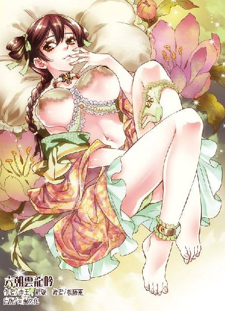

第50集·宛洛游侠
汉国篇（2/28）
出版日期：2014-02-14
【本集内容简介】
七里坊内新开张的游冶台成功吸引了舞都豪强子弟的目光，争相一掷千金。游冶台对面的饼铺则更为热闹，如玉般娇嫩的云如瑶当炉卖饼，使得云家三爷、六爷再也无法视若无睹，最终屈服。程宗扬也因此得知云如瑶的身世……
“蒿里谁家地，聚敛魂魄无贤愚”——汉国游侠豁达至此，饮酒歌挽辞，难掩朱老头心事重重的背影。当年未央宫晋封阳武侯之事，到底隐藏着什么内幕？朱老头一心催促程宗扬赴洛，真实用意又是为何？
※ ※ ※ ※ ※

封面人物：小桃红
程宗扬踏着靠在墙头的木梯，望着远处的平亭侯府。这处舞都最大的府邸此时被郡兵包围得水泄不通，如狼似虎的兵卒从各处坊门涌入府中，无论男女一律套上铁链，关入囚车。侯府内的眷属、姬妾、奴仆、婢女不下千人，在突如其来的变故下，一个个骇得面无人色，战战兢兢跪在地上，如砧上鱼肉一般听任摆布。宵禁的大街上行人绝迹，但在暗处，不知有多少双胆战心惊的眼睛盯着这一幕。
“不对啊。”程宗扬道：“新来的太守才上任几天？就算他已经把邳家横行不法的劣迹上奏朝廷，可朝廷刚刚才下的诏令，把平亭侯逮入诏狱——案子都还没开始审呢，他怎么就抓人了？还是从主子到奴才满门抄斩的阵势？根本没道理啊！”
“小程子，这你就不懂了吧。”朱老头道：“当年周大将军下狱论罪之后，汉国就定下规矩，三公九卿、王侯显贵，按例不得入狱，以免受辱于小人——这叫刑不上大夫。”
“汉国高官贵族们的待遇这么好？连入狱都不用？”
“那当然。”朱老头道：“接到诏书，该服毒的服毒，该上吊的上吊。再体面一点的，就伏剑自尽，反正是不能入狱。”
“停！停！停！你说王侯不能入狱，结果是一接到诏书就干脆自杀？”程宗扬都糊涂了，“诏书不是让去对质的吗？万一是冤枉的呢？”
“冤枉也得死啊！你还没听明白，要紧的是‘下诏’——天子一下诏，意思就是‘你赶紧死吧’！接到诏书还觉得自己冤枉，还想对质，还要讨个说法，给自己弄个清白，那就更该死了。”
程宗扬好不容易才绕过这个弯，“你的意思是，天子一下诏，就是让接诏书的人去死？”
“废话！天子若不想杀人，根本不会下诏。”
“可他要是不死呢？”
“那就是不给天子面子，不讲规矩。”朱老头道：“汉国人是很质朴的，一般来说，对于这种破坏规矩的败类，朝廷处置的方法很简单——”朱老头右手用力往下一劈，“一个字：族。”
“族灭？”
朱老头欣然道：“孺子可教也。”
程宗扬终于明白眼前这一幕究竟是怎么回事。平亭侯阖门入狱，其实与邳家究竟干了多少横行不法的恶事没有太大关系，要紧的是天子的态度——让平亭侯去死。
“平亭侯怎么得罪天子了？”
“看到他的府邸有多大了吗？”
朱老头答非所问，程宗扬却若有所悟。平亭侯一个侯爵，仅在首阳山就有十几万亩的封地，食邑四千户。这些人口和田地都属于封国所有，甚至地方官府都不得管束。汉国封侯数百，还有一堆更大的诸侯王，按照法律他们有权力自辟僚属，在封地设置家宰、家丞、家臣，俨然是一个小小的独立王国。若是守成之主还好说，遇上一个有为之主，肯定要想方设法打击这些势力。
朱老头道：“去年天子祭祀，因为诸侯奉献的祭品不足，就撤掉了好几个诸侯王，何况平亭侯是被当地太守上奏有罪。”
程宗扬彻底明白过来。说起来平亭侯确实是挺冤的，天子这就跟捞鱼一样，捞着谁算谁倒霉。问题是天子想灭谁也需要一个理由，而宁成就把这个理由送到天子面前，就此把邳家送上了不归路。
如果说刚才程宗扬还在纳闷，为什么宁太守认为平亭侯会自杀，现在他反而奇怪，平亭侯为什么不自杀呢？
“心存侥幸呗。”朱老头道：“如果换个人，也许他就活下来了，可惜遇到了这位宁太守。”
“痛快点儿！你再不痛快点把话说明白，我就给你个痛快！”
“小程子，你别急啊，大爷这不正在说吗？”朱老头道：“如今的天子登基以来，就有七次大赦天下。平亭侯就是指望到九月间天子再次大赦，自己熬一个月就能脱罪。可惜啊可惜，这位宁太守连一个月时间都不肯给他。”
从平亭侯入诏狱到定罪，按正常流程起码要一个月时间。如果运气好，遇上大赦，收拾收拾就能回家，可宁成这酷吏狠到了骨子里，根本不等诏书就把邳家全族下狱。此举虽然已经越过律法的底线，但正合了天子的心意。说白了，宁成这样的酷吏就是帝王的鹰犬，只为君主一个人的权力服务，抄家灭族视为等闲，甚至连法律也不放在眼里。平亭侯的小手段在宁成面前不堪一击，邳家这回是凶多吉少了。
程宗扬默默看了一会儿，然后留下一句话：“开矿吧。”
邳家覆灭，有人欢喜有人忧。城中豪强个个心惊，一墙之隔的七里坊却是一派盛世景象。城中的宵禁只是限制街上行人往来，坊内就是彻夜不休也无人来管。如今七里坊除了绳技，又多了汉国百姓喜闻乐见的角抵之戏，几名力士在场中角抵，不时赢得阵阵喝彩声。
连日来，随着在坊中停留的客人不断增多，路边的摊贩也推出宵夜。虽然品种很简单，无非面饼、酱汁再加一碗热汤，但对于饥肠辘辘的客人不啻于雪中送炭，一路走来，不时看到有人席地而坐，弹铗高歌。
“汉人朴实刚劲，多慷慨悲歌之士。”朱老头道：“以其宁折勿弯，因之过刚易折。”
汉国不是没有奸猾之徒，但大多光明磊落，即使玩弄手段也直来直去，宁为玉碎，不为瓦全。像宁成这样直接灭门的酷吏、奉诏便慷慨自尽的王公重臣，在宋国根本难以想象。你让高俅自杀一个试试？宋主若派人拿着诏书质问，那家伙肯定一边大呼冤枉，一边千方百计找出告黑状的是谁，然后反咬一口。
把宁成换成秦桧，也绝不会摆明车马和邳家对着干，多半是笑里藏刀，虚与委蛇，然后找准机会密奏天子，一击毙命。像宁成这样虽然痛快，但他没给邳家留后路，同样也没有给自己留后路，一旦失去天子的庇护，就是身死族灭的下场。
程宗扬道：“老头儿，汉国怎么就出了你这么个败类呢？”
“老夫大业未成，岂能轻死？”
“什么大业？”程宗扬用玩笑的口吻道：“王子复仇记吗？”
朱老头负着手，冷哼一声，一边踱步，一边长声歌道：“山中相送罢，日暮掩柴扉。春草年年绿，王孙归不归……”
一场角抵分出胜负，喝彩声再次响起，欢腾的人群掩住了朱老头略显落寞的背影。
※ ※ ※ ※ ※
“舞都不能再待了。”程宗扬道：“我得去趟洛都，要不老头非疯不可。”
小紫道：“好啊。听说洛都很好玩呢。”
程宗扬歉然道：“瑶儿，我本来想带着你堂堂正正回云家，免得你与家人不合。但现在……”
想起家事，云如瑶黯然神伤，摇头道：“不妨的。”她目光微微闪动几下，然后抬起脸，“奴家却有个主意——郎君可否能再留几日？”
“多留几天当然可以，只不过六哥和三哥出门远行，不知道什么时候才能回来。”
“两位哥哥必定是在堡中。”云如瑶下定决心，起身道：“小紫妹妹，你的婢女借我使唤几天，可使得？”
小紫笑吟吟道：“好啊。”
程宗扬不解地问道：“瑶儿，你要做什么？”
云如瑶嫣然一笑，“过得几日，郎君便知晓了。”
云如瑶唤上雁儿去了邻室。程宗扬换上一副口水长流的猪哥相，狞笑着对小紫道：“死丫头，雁儿也陪过我了，怎么也该轮到你了吧？”
小紫抬起脸甜甜一笑，伸手将阮香凝推到他怀中。
※ ※ ※ ※ ※
“啊……”
阮香凝低叫一声，昂起柔颈，精致的双眉紧紧颦起。
程宗扬挺起小腹，重重压在充满弹性的雪臀上，阳具像铁棒一样深深捅入阮香凝体内。这些天虽然与云如瑶交颈缠绵，但她身子娇弱，他在交合中总不免留了几分力气。这会儿骑在凝美人儿丰满肥翘、又白又嫩的大屁股上，程宗扬抛开了所有顾忌，肆无忌惮地狂插猛送。
阮香凝顺从地伏在主人身下婉转承欢，但她久旷多时，被没有半点怜惜的主人粗暴地进入体内，身体本能地有些不适。她蹙起娥眉，下体传来阵阵滞涩的痛楚。
“哆啦Ａ梦！”
阮香凝娇躯一颤，目光变得涣散。
程宗扬懒得搞什么前戏，直接用阮香凝自己的瞑寂术控制她的身体，然后强迫她进入高潮。
“凝奴，浪一个。”
阮香凝蜜穴抽动了一下，随即淫汁四溢，一瞬间变得滑腻无比，阳具轻易贯入蜜穴，顶住花心。
“很好。现在把你的小妹妹剥开，用你全身的力气让它一直保持发浪的状态。然后自己计数，主人每干你一百下，就浪出水来。”
阮香凝伏在地上，细白的玉指抱住臀肉，将羞处掰得敞开，露出玉户间红腻如脂的蜜肉。高翘的雪臀间，娇艳的性器像花瓣一样绽开，湿媚的穴口仿佛一张小嘴，在肉棒上不停抽动。她颤抖着翘起屁股，体内柔腻的蜜腔不停收缩，程宗扬身体不动就能感觉到她的下体不住收紧，来回挤弄阳具，不时挤出一股清亮的蜜汁。
不多时，阮香凝身体一阵颤抖，白美的雪臀哆嗦着收紧，一股阴精从蜜穴深处涌出。程宗扬气轮微微一动，将一丝阴精纳入丹田。
阮香凝意识仍然清醒，肉体却完全处于主人控制之下，那根火热的阳具在她痉挛的蜜穴中抽送着，每到一百下就迸发出一波高潮。短短两刻钟，阮香凝连续六次泄身，阴精被榨取一空。
眼看阮香凝玉体乱颤，屁股高翘着一耸一耸地泄身，程宗扬拔出阳具，对着她柔嫩的后庭用力干进去。
阮香凝发出一声悲鸣，涂过酥油的屁眼儿在粗硬的龟头下没有丝毫抵抗，就被挤得圆圆张开。肉棒硬梆梆捣入肛中，丰腻的雪臀仿佛被粗大的棒身挤得膨胀开来。
良久，程宗扬低吼一声，在她屁眼里剧烈地喷射起来，而后松开身下的少妇，仰身靠在床榻上，赤裸而精壮的身上满是汗水。
阮香凝像白羊一样赤条条地伏在他腿间，雪白的屁股仍在微微颤抖，臀间两个肉孔还残留着纵淫的痕迹，一股白浊的浓精从肛中溢出，顺着臀沟缓缓淌下。
“公子……”阮香凝满脸羞红，小声道：“奴婢想求公子……把奴婢收为妾侍……”
“嗯？”
“奴婢愿意一生一世都服侍公子……”
“现在不就是吗？”
阮香凝嗫嚅了一下，低声道：“奴婢的姐姐已经许给公子为妾……”
“你们姐妹连这也要比？难道你觉得现在的身份不如她？”
“奴婢不敢嫉妒姐姐，只是……阿姐对奴婢恨之入骨。”
“你当上妾侍，她就不恨你了吗？”
“那位梁夫人原本一直看不起姐姐，后来阿姐拜见过公子的长辈，被公子纳为妾侍，梁夫人就再不敢对姐姐盛气凌人，还千方百计讨好姐姐。公子可能还不知晓，那位梁夫人每日都去姐姐家里，结果有次姐夫喝醉污了她的身子，也不敢声张。后来姐姐知道，与姐夫大闹一场，分府别居。”
这是又一个版本。当初阮香琳被程宗扬纳为妾室，在刘娥面前立誓恪守妇道，为他守贞，自家的丈夫倒成了摆设。所谓“李寅臣酒后强暴梁夫人”，其实是阮香琳故意把梁夫人送去供丈夫消遣，用来补偿丈夫。程宗扬没想到的是，阮香琳竟然借机与丈夫分居——既能为他守贞，又暗中给了丈夫补偿，外面还不露丝毫破绽，果然是个够精明的女子。只有黄莺怜倒霉，成了夫妻两个摆布的玩物。
对于梁夫人与李总镖头勾搭到一处，程宗扬没什么感觉。他从来都不觉得黄莺怜是自己的女人，就像游婵与他交情非同一般，他也没打算把游婵收入房中，反而劝她嫁人——占有欲那么强，逛一趟青楼还不把所有的妓女都赎回家？
程宗扬没有开口，只搂住阮香凝的粉颈，把阳具捅进她柔艳的红唇间，慢条斯理地插弄她的小嘴。
阮香凝嘴巴被占住，知道主人不想让她多嘴，于是伸出香舌殷勤地舔舐起来。
※ ※ ※ ※ ※
“喔——哈！”
暴喝声中，利斧疾劈而下，木柴朝两边飞开，斧刃深深斫进木桩。
“哈大叔！看到了没？”高智商嚷道：“五百！整整五百！少爷我一口气劈完，连气都不带喘的！咳！咳！”
哈迷蚩耷拉着眼皮，仅剩的一只独眼翻了翻，干巴巴道：“再加五百。”
“大叔！饶了我吧！我刚才是吹牛的，你瞧，我膀子都肿了！大叔……饶命啊……”
高智商抱着哈迷蚩的大腿嚎啕大哭，要不是他的裤子也归自己洗，顺便就把鼻涕都抹他腿上了。
“六百。”
高智商瞬间收起眼泪，痛快地说道：“五百就五百！哈大叔你放心，我一根不少给你劈出来，绝对不耽误你烧茶！大叔，你等着啊！”
高智商操起斧头，玩命地劈了起来。
程宗扬抱着肩晃过来，笑眯眯道：“劈柴啊？好，好，好！听说有位姓耿的少侠，就是从小劈柴打熬底子，后来练成一身超凡脱俗的修为，还娶了一堆美女……小子，好好劈啊。有前途！”
“真的？”高智商抡掉衣物，拍着精瘦的胸膛道：“师父！你就瞧我的吧！啊呀——嘿！”
程宗扬看了一会儿，对哈迷蚩笑道：“老爷子辛苦，这小子还听话吧？”
老兽人提起木杖，往石臼上“砰”地敲了一记，高智商听在耳中，腿肚子顿时哆嗦了一下。哈迷蚩弓着背，斑驳的皮毛仿佛一头枯瘦的老狼，神情木然地说道：“还行。”
程宗扬笑道：“哈老爷子好手段，短短几个月，这小子就像变了个人似的，肚子也没了，腰腿也结实了，整个人精气神都不一样了。”说着他压低声音，“不过这小子养尊处优惯了，猛地一下瘦成这样，不会出事吧？说起来这小兔崽子才十七岁，正在发育呢。”
“十七？”哈迷蚩皱起眉，然后摇了摇头。
程宗扬道：“让这臭小子劈柴是为他好，不过一大清早就劈一千根木头，是不是多了点？又没人指望让他去当冲锋陷阵的猛将，身体能结实点就行了。”
“他的上肩骨已经长实，”哈迷蚩道：“再不拉开便晚了。”
哈迷蚩丝毫不肯通融，程宗扬只好作罢。五百根木柴劈完起码要大半个时辰，以高智商现在的力气，就是劈到中午也不稀奇。程宗扬本来想叫上高智商，听听他开矿的主意，但天大地大不如老兽人的规矩大，这会儿只好先撂开手。
敖润、冯源和富安一大早就被打发出去，四处寻找开矿的工匠。但舞都最好的匠人、最出色的歌姬、最能干的仆役，全在豪强家里，三人忙碌一上午，也只找到一些散户。
程宗扬一看就知道要糟，首阳山的铜矿位于深山，需要的人力绝对不是小数目，从其他地方招募工匠肯定不实际。而舞都无论人力还是土地、物资，都被豪强垄断，他们不配合，一般人根本做不下来。难怪当初官府贴出告示，愿意来的外地商人也寥寥无几。宁成这么痛快就把铜矿扔给他，多半也是因为没有什么可选择的余地。
“师父别慌，这事儿好办！”高智商光着膀子，由富安拿药酒在肩膀上用力擦着，龇牙咧嘴地说道：“我跟爹爹说一声，让他调两千名禁军过来，保证吃得比猪差，干得比驴多！连工钱都不用发，直接跟我爹爹结账就行。”
“打住！调两千名宋军来舞都？明天两国就得打起来。”
富安也诚恳地说道：“衙内这主意好是好，就是有点臊。”
冯源道：“要不跟本地的豪强商量商量？从他们手里雇佣些家奴？”
“宁太守摆明是要跟本地豪强对着干，咱们再去和他们穿一条裤子，本地的豪强不放心，太守那边也不落好。”
高智商眼睛忽然一亮，“罪囚啊！这事儿我爹干过，跟地方官府勾搭好，派一队禁军看着，把罪囚押到河里淘金——赚了不少钱呢。”
富安赶紧道：“衙内，你喝醉了。”
高智商斥道：“你这个糊涂狗才，跟我师父有什么不能说的？对吧，师父？”
程宗扬苦笑道：“对。但在别人面前千万别说。”
“师父放心，我有分寸呢。师父，你觉得我这主意怎么样？”
“我看不怎么样，开矿不是几百人力的事，几千名罪囚，上哪儿找去？”
“邳家啊！据说光家奴就有好几千人。”
“家奴不全是罪犯。”
“罪犯不罪犯，还不是老宁一句话的事儿。说你是罪犯就是罪犯，敢不服？罪加三等。”高智商爬起来道：“师父，我去跟老宁说！只要老宁出马，保证那些家奴只有磕头的份儿。”
※ ※ ※ ※ ※
高智商初生牛犊不怕虎，换了身体面衣服，带着冯源和青面兽就去登门拜访。谁知宁太守去了牢狱，据说正在日夜不息地审理邳家罪行，一边审一边把罪名确凿的囚犯顺手勾决。宁成怎么审案，没人知道，反正天一亮就不断看到有人头被送出来，挂在城门外。
城中豪强百般打听，到了第三天，又送出几个狱卒和小吏的脑袋与那些罪囚作伴。城中的豪强立刻偃旗息鼓，把大门关得紧紧的，连下人也不得随便出入。
程宗扬原本觉得用罪犯当劳力不是什么好主意，这会儿也不由地提心吊胆，生怕宁成一时兴起，把人全杀完了。
高智商天天登门，后来厮混熟了，索性住在太守府的耳房里，随时等着宁成回来。太守府的耳房原本是给访客等候用的，但宁成在舞都杀得血气冲天，耳房里别说客人，连个鬼影都没有，倒是便宜了高智商。
弥漫整个舞都的凛凛杀气，不可避免地影响到七里坊的生意，一连几日坊里都冷清了许多。路过留宿的客人也再不敢弹铗高歌，连问价的声音也低了几分。程宗扬在忙碌中，突然觉得清闲下来。
云如瑶整天和雁儿还有小紫泡在一起，叽叽咕咕不知商量些什么。第二天她找到敖润，让他在坊中划出一块地，简单围了土墙，搭起架子，一应草图都是她亲手所绘。
程宗扬也没留在屋里醉生梦死，既然有空，就继续到云家登门求见，但他的待遇比高智商惨多了，别说耳房，连吊桥都没摸着。每天天一亮就去，天快黑才悻悻回来。
皇天不负有心人，等到第三天傍晚，宁成终于从牢狱回来更衣。高智商赶着见了一面，夜里才醉醺醺地回来。
高智商大着舌头道：“都……都说好了。一……一千罪囚，保……保证身强力壮……师……师父，我不错吧？”说着如一摊软泥般醉倒。
程宗扬道：“怎么醉成这样？”
高智商哼了两声，忽然睁开眼，直着眼睛道：“我……我没吃肉！跟哈大叔说……说……”说完才放心地醉倒。
冯源道：“宁太守听说衙内是家主的伴当，很给面子，专门留了衙内用饭。席间又听说是他先打听到城内群盗欲对太守不利，更是十分高兴。衙内一说开矿要用罪囚，太守就说早该如此，邳家那些家奴仗势欺人，横行乡里，正该狠狠惩诫一番。当下让人拿来名册，先从狱中其他囚犯中勾出一百多人，剩下的从邳家的名册中勾足。等明天黥了面，就能打发到山里去。”
程宗扬呆了半晌，感叹道：“什么叫效率！汉国官员这作风，太刚劲朴实了！但一下勾了八百多人——真的没问题吗？”
“宁太守说，算他们运气好，本来有四百多人定的是死罪，如今除了几十个罪行严重的，其他像打过人的、抢过鸡的都免死了，那些罪囚感恩戴德还来不及呢。”
打人偷鸡都是死罪？真不知道宁成是以什么罪名入刑的。不过想想也知道，多半是轻罪重处，小事变大事，大事变砍头。豪强都灭了，杀这些豪门家奴，宁成一点心理负担都没有。
“这些又不是没有户籍的流民，他怎么也说杀就杀？不用请旨？”
冯源道：“据说宁太守上奏时已经顺道请了旨意，前日刚送到才开始砍头。”
效率实在太高了，连审带判加上请旨杀头，一点都不耽误。程宗扬抱着手臂在室内转了一圈，“这事宁太守能做，咱们不能这么做。毕竟宁成的舞都太守也不能当一辈子。咱们做生意的图的是长久——回复宁太守，这些囚犯既然罪行不重，在我们程氏商会做满三年，即可离开。做工期间，工钱一半由商会每月交给官府，一半由商会代存，期满一并领取。期满后如果愿意留在矿上继续做工，工钱翻倍，而且商会将在城中给他们提供房屋。”
冯源掂量道：“程头儿，这是不是太宽厚了？给工钱就罢了，再高薪厚赏收容这些人，好像……不大值当。”
“你以为我是好心到有钱都不愿意赚吗？”程宗扬推开窗户，望着七里坊的夜市道：“在你看来，舞都和临安最大的不同是什么？”
“人少，哪儿像临安，随便一家瓦子都热热闹闹的。”
“不是人少，舞都的人口一点都不少，但平民太少。舞都十几家豪强，占了七成土地、超过八成的财富，大批人口成为他们的家奴和部曲。城中的平民全加起来，还不及他们家奴的三分之一。我厚待那些罪囚，不是因为我是滥好人，而是因为七里坊的繁荣需要更多的平民。”程宗扬道：“每多一户有消费能力的平民，七里坊就能多一个顾客，地位也就稳定一分，到时即使宁成迁官他处，七里坊也能支撑下来。”
冯源干笑两声，“虽然我听不太明白，但程头儿肯定是高瞻远瞩。”
程宗扬笑道：“冯大法，你的马屁功夫可要跟老秦好好学学。”
说话间，外面传来一阵动静。
程宗扬愕然道：“怎么回事？”
冯源凑过去看了一眼，“哦，吃饭时宁太守发落罪囚中的女眷，本来依律该没为官婢，但宁太守说本地官员用不着这些，一律发卖。衙内说咱们这儿缺人，就把她们都买了回来。”
※ ※ ※ ※ ※
简陋的院子里，一百余名获罪的女奴满满跪了一地。她们穿着红土染过的粗布囚衣，钗簪都被剥去，一个个披头散发，不少人还赤着脚，神情惶恐间带着认命的麻木。
云如瑶坐在椅中，一边看着案上的木简，一边慢慢道：“官卖罪奴一百二十六人，都去坊里做工，未免太多了些。这样吧，三分之一留在内院使唤，三分之一在坊中各处商铺帮工。余下的，坊里要开一间青楼，名叫游冶台。雁儿，你问问，愿意去的便分派出去。”
那些女子略微有了些生气，雁儿问了一下，有一半愿意在内院当婢女，愿意去商铺做工的不到二十人，肯去青楼的更是一个没有。
云如瑶嗔道：“雁丫头，不是这样问的。”她略略提高声音，“你们都听清楚了——愿意去商铺的，只要与商会签下做工的契约，待做满期限便可自行选择留下或离去。当奴婢的，签的都是奴契，非主人开恩不得赎身。至于去游冶台的，平日锦衣玉食，还有小婢服侍，比寻常的小姐也不差。”
下面的女子互相看着，但都没有开口。
云如瑶也不着急，她拿起一支木简，看着上面的姓名、年龄，然后抬眼望着前面一个女子，柔声道：“你是邳寿家的少夫人？”
那女子低声道：“是。”
“看着倒年轻。”
“奴婢是续弦。”
云如瑶微微一笑，“眼下这些奴婢里面，你算是正经的主母了。”
“不敢。”少夫人低声道：“奴婢愿意服侍夫人。”
云如瑶摇了摇头，“不行的，邳家虽然没了，但有你以往的身份，这些奴婢总不免三心二意。既然你已经被商会买下，得要你做个榜样才是。”
云如瑶慢条斯理地说道：“这样吧，看你还有几分姿色，年纪也不甚大，便去游冶台好了。”
邳家少夫人涨红了脸，半晌才低声哀求道：“求夫人开恩。”
“你嫁入邳家不过六年，不计被你随便发卖出去的妾婢，单是杖毙的小婢就有五个。”云如瑶拿起茶水浅浅饮了一口，淡淡道：“莫非你以为我就不能杖毙一个罪奴吗？”
那妇人浑身一颤，脸色雪白地低下头去。
“雁儿，带她去吧。只要听话、肯用心做事，衣饰、饮食都比照她在邳家的用度，不得亏欠。”
云如瑶放下茶杯，又拿起一支木简，“邳家三女——是哪一个？”
一个少女小声道：“奴婢愿一生一世服侍主人。”
云如瑶轻笑道：“那怎么行？你一个娇小姐，起居睡卧都要人服侍，哪里会服侍人？还是去游冶台让人服侍好了。”
少女泣声道：“求夫人垂怜……奴婢还未曾出阁，若是……只有一死……”
云如瑶柔声道：“你且站起来。”
少女颤巍巍站起身，她十七八岁年纪，容貌姣好，一头青丝用布条扎住，气色比其他女子好了许多。从侯府沦入狱中，她的傲气已经荡然无存，目光中多了几分畏惧。
“难得衣裳这般整洁，看来在牢中没有吃多少苦头。”云如瑶吩咐道：“蛇奴，你去看看。”
一个戴着面具的侍奴如鬼魅般现出身形，她身上穿着黑亮的皮革，腰间系着一条布满丁结的长鞭，虽然没有开口，但给众人带来巨大的压力。场中温度仿佛凭空低了几度，众人都屏住呼吸。她绕着三小姐走了一圈，伸手捞起衣角。
邳家三小姐的脸色一下变得惨白。
蛇夫人摸了摸她下裳几点不起眼的污迹，然后舔了舔指尖，“是血迹。”
邳家三小姐再也支援不住，软软坐倒在地。
云如瑶柔声道：“你们在牢中，每三人一颗窝头，一瓢水，到得第二天便有人忍饥不住，向狱卒乞食，三小姐难道忘了吗？”
少女双手掩面，低低哭泣起来。
云如瑶笑了笑，“莫以为我是心肠软的。雁儿，带她下去饿两天，她便知道该怎么做了。”
院中安静得掉根针都能听见。一连处置了两个邳家的女眷，一个是主母，一个是未出阁的小姐，都被打发去了青楼，剩下的婢妾都不敢出声，屏息听着新主人的发落。
云如瑶道：“不管你们以前是什么身份，如今都是我商会的奴婢。我们虽是商家，行事也有分寸。你们之间能吃苦、肯上进的，自可去铺上做工，待得契约期满，是去是留，随你们自己心意。用心仔细、能对主子忠心的，在宅中为婢也无妨。有那些仗着自己有几分姿色，好逸恶劳，吃不得苦，下不得力，又不能守身如玉的，去青楼也是彼此两便。”云如瑶淡淡道：“就这样吧。雁儿，你们去分派。”
满院的女子被分别带下，不多时便陆续散开。
程宗扬笑道：“还真有几分主母的样子。”
云如瑶起身帮他除下外衣，一边道：“多亏了小紫妹妹，若不是她让那几个侍奴打听出底细，奴家也难让这些人服贴。”
“游冶台？”程宗扬有些奇怪地问道：“坊里有这东西？不会是富安招来的那些吧？”
“不是那个。”云如瑶道：“是奴家让人建的。不说来往的客商，便是商会的人，也要有个消遣的去处。”
程宗扬踌躇了一下，“让人去当妓女，是不是不太好？”
云如瑶用团扇掩住小嘴，轻笑道：“难怪小紫妹妹说你是滥好人……郎君放心，挑去游冶台的都是有缘由的。像邳家的少夫人欠着好几条人命，那位三小姐也是个浮浪的性子。邳家有志气的，当初破家时就已经自尽，独留下她们两个，显然是不舍得死。她们既然已经打定主意便是忍辱也要苟活，我又何必好心供着她们？”
程宗扬暗自叹了口气，虽然他并不认可，但云如瑶说的确实没错。她们虽然哭哭啼啼，但既然选择苟活，未尝就不知道自己的下场，云如瑶只是没有给她们侥幸的机会而已。
云如瑶道：“其他的多半是邳家的歌姬，她们平素锦衣玉食，以色事人，既做不得工又难以使唤。商会里都是些年轻力壮的男子，眼下来了这些女人，不定要闹出什么事来。与其放在别处彼此不相安，不若把那些不安分的都打发出去，一来免得闹出事端，坏了风气，二来游冶台的衣食都比照邳家的待遇，她们也好享受几日。况且我也让雁儿去问了，总要愿意了才好打发去。”
程宗扬略微安心了一些，只要不是逼良为娼就好。不过话说回来，这些女子都是罪奴，原也称不上什么良家。
“你作主就行。院里留的奴婢够不够用？”
云如瑶白了他一眼，“郎君是觉得留得太多了吧？”
程宗扬打了个哈哈。三分之一就是四十多个奴婢，在他看来确实是挺多的。
“商会这么多男子，总要留些合适的，将来好婚配。”云如瑶笑着推了他一把，“可不是给你留的。”
“有我家瑶儿珠玉在前，那些庸脂俗粉，我连看都懒得看！”程宗扬气节十足地说着，一边抱起云如瑶往屋内走去。
云如瑶拦住他的手，小声道：“奴家今晚要和小紫妹妹说些话，让凝奴陪你好吗？”
“办完事再说，只要你乖乖的，最多半个时辰……”
※ ※ ※ ※ ※
“这也太简陋了。”
程宗扬拍了拍还没有上漆的木柱，摇了摇头。
这座被命名为“游冶台”的建筑只用短短数日就建造完毕，能这么快不是因为汉国的工匠效率惊人，而是整个建筑简单到不能再简单。大厅的主体是三十二根铁杉木组成的柱子，正面一排四根，一共八排。那些柱子牢牢埋在地下，露出地面的高度超过两丈，间距中间略宽，两边略窄。外面用竹子编成篱笆，挂上草席作为墙壁。由于没有足够大的苫席，建筑只在两边苫了顶，中间部分的顶部都空着，抬头就能看到满天的星光。
程宗扬抬头望着柱顶，“连大梁都没有，这还能叫房子吗？”
冯源道：“外面看起来是寒酸了些，但里面还过得去。”
程宗扬举步入内，只见整个大厅沿着柱子左右两列一共隔出十二个独立的房间，最后一排被单独隔开，里面架上木梯，做成上下两层的内楼。与外表的简陋不同，厅内的地上铺着猩红的地毯，四周挂着绘满图案的绒幕，张起几重五彩的轻纱，再加上几盏十六瓣的莲花灯，立刻显得华丽起来。
程宗扬正在查看，外面传来一个声音：“古怪！古怪！卫七少，你们汉国的院子里干嘛要搭座木台子？”
旁边一个公子哥儿道：“我也是头一次见，莫不是搭的脚手？”
“我见识不多，”高智商道：“可哪儿有这么低的脚手？要说是勾栏也没有这种直来直去，还不带栏杆的。”
程宗扬不禁莞尔。大厅正中两排木柱之间有一座长长的木台，从内楼一直延伸到大厅前端。木台宽及丈许，高度却只有两尺，猛然一看，的确让人摸不着头脑。
那公子拍了拍木料，“这些木材都没有脱过水，虽然铁杉木质地实密坚固，不脱水也能使用，但总不及晒干的耐久。”
高智商道：“脱水要好几年，先凑合着用吧。咦？师父！师父！”
高智商兴高采烈地跑过来，“师父！你也在啊！这是城里卫家的七公子！单名一个衡字。这是我师父，盘江程氏的少主，程氏商会的东家。”
卫衡拱手道：“久仰！久仰！”
程宗扬有些意外，舞都的豪强对宁成畏如猛虎，连带的对自己也敬而远之，没想到高智商这个冒名的小厮倒和他们先拉上关系。
程宗扬也笑着拱手，“久仰！”
高智商道：“卫七少在家里也听说了七里坊热闹，今天正好有空，一起来逛逛。师父，咱们这游冶台怎么跟别的地方都不一样？”
那木台程宗扬一看就知道是死丫头的主意，他敢打赌，这Ｔ型台在整个六朝都没有。
程宗扬笑道：“这是游冶台的特色，卫公子若有兴趣，不妨观赏一番。”
卫衡也不客套，抱拳道：“叨扰！”
冯源进去吩咐几声，随即几名小婢搬来几案、坐榻，奉上瓜果酒水。
汉国平常都是席地跪坐，看到坐榻，卫衡不免有些新奇，“这是胡床？”
“这比胡床舒服。”高智商脱了鞋往榻上随意一靠，招呼道：“卫七少，尝尝这酒，临安大内的内府流香！能在舞都喝到可不容易。”
卫衡结交高智商原本是投石问路，他出身舞都的豪强大族，其实并不把这个小厮放在眼里，不过此时看到高智商的作派，虽然其貌不扬，但自然而然流露出一番贵气，显然是享受惯的，不禁暗自讶异。
高智商涎着脸道：“师父，有什么好玩的？”
程宗扬笑道：“多半是让那些女子走走路吧。”
“哦……”高智商恍然大悟，其实一点都不明白，但这不妨碍他吹嘘，一脸自负地说道：“七少，邳家的歌姬你以前见过吧？”
卫衡微微一笑，“倒是见过一些。”
“有我们商会调教过，保证和你以前见过的不一样！”高智商转头道：“对吧，师父？”
程宗扬笑道：“怕是让卫公子见笑了。”
小婢们斟了酒，奉上瓜果，她们都是邳家的婢女，刚从牢狱出来，一个个余惊未消，好在都是伺候惯的，并不生疏，反而更加小心谨慎。
程宗扬欠了欠身，“卫公子少坐，我去后面看看。”
“程少主客气了。”
程宗扬走到后面的隔间，高智商追上来笑嘻嘻道：“前日我从太守府里出来，正好遇见他路过，攀谈几句就认识了。我打听过，他是卫家的庶子，平常没人管束，是个好游荡的，与城里豪强的子弟大都相熟。”
难怪卫衡会与高智商结交。汉国嫡庶分明，一般的庶子比起家奴身份也高不了多少。不过这些庶子毕竟出身富贵，平素出没豪门，倒是上上下下都能说得上话。卫家主动让子弟接近他，打的主意不问可知。程宗扬怕的就是舞都的豪强把门一关，老死不相往来，如今他们肯露头最好不过。
冯源道：“要不要我再请些人来？有几个买木料的客人跟我相熟，如今都在城里，多叫几个人也热闹。”
程宗扬盘算了一下，“不能叫太多，有三四个人就行。游冶台还没开张，今晚只当是请几个好友私下聚聚吧！”
“成。”冯源答应一声，自去叫人。
高智商也想走，程宗扬道：“既然来了，就跟我一起转转吧。”
高智商跟着程宗扬一边走，一边东张西望，“地方还不错啊，就是住得挤了些。”
内楼是台中诸女暂时的栖身处。云如瑶所料不差，除了几个侍妾，愿意来的都是邳家昔日的歌妓。这些女子原本就是邳家豢养来供客人欢娱的玩物，听闻游冶台的衣食用度都比别处高出几等，便有不少人暗暗动了心思。再看到连以往的主母也被打发来接客，这些女子纷纷抛开矜持，雁儿一问便点头应允。愿意到游冶台接客的妓女一共二十四人，再加上十几名婢女都住在内楼，确实拥挤了些。
两人刚踏入楼内便闻到扑鼻的脂粉香气。听到声音，一个女子从楼里出来，她身材高挑，穿着天青色的纱衣，宽大的衣袖从肘间垂下，露出两条雪藕般的手臂，衣襟开成心型，酥胸半露，白花花的荡人心魄。高智商一看，身体就酥了半边，连口水流出来都未察觉。
那女子容貌艳丽，身材饱满，充满成熟而性感的风情。见到高智商的呆样，她眼波一转，唇角露出一丝笑意，那笑容有三分媚艳，倒有九分挑逗。
高智商三魂顿时飞了两魂，直勾勾盯着那女子，半晌才喃喃道：“师父，这美人儿是谁？”
“你紫姐姐的侍奴。”
高智商像被人抽了一记耳光似的清醒过来，立刻擦了把口水，垂手而立，眼观鼻，鼻观心，老僧入定一样，一点多余的想法都没有了。
程宗扬道：“我徒儿还嫩着呢，少施展你们那些媚术。”
蛇夫人连忙收起媚态，躬身道：“是。”
“雁儿呢？”
“雁儿姑娘不喜欢此地，让奴婢和罂奴在此照看。”
游冶台毕竟是青楼，雁儿不肯来也可以理解，程宗扬不明白的是瑶丫头的心思——她一个豪门千金竟然建了一座青楼，这事如果传扬出去，云家的面子还往哪儿搁？
程宗扬心里嘀咕，她不会是打算用这种方法来逼哥哥们服软吧？如果真是这样，瑶丫头只怕是打错了主意。凭他对云苍峰和云秀峰的了解，这两人一个外和内刚，一个面冷心热，都绝不是会受人要挟的性子。云如瑶与他私奔已经突破了云家的底线，再摇身一变成为青楼的老鸨，云家知道后非但不可能让步，反目成仇的可能性倒是高到爆表。云如瑶真要这样败坏云家的名头，只会让兄妹间原有的情分化为乌有，使事态彻底无法收拾。
程宗扬也正是因为放心不下，才赶在游冶台开张之前过来看看。
蛇夫人看出主人怀着心事，不敢过去撩拨，她挽着高智商的手笑道：“衙内方才是说地方狭窄吗？”
被主人警告之后，蛇夫人不敢再施展媚术，她妆容依旧，但眉眼间少了那番惊心动魄的媚态，在高智商面前倒像个温和的大姐姐一样亲切近人。
高智商长出一口气，顿时轻松起来，笑嘻嘻道：“我是怕蛇姐姐这样的美人儿被挤坏了。”
“好个油嘴的小子。”蛇夫人笑道：“这游冶台的房间都是紫妈妈和瑶夫人安排好的。你瞧，外面有十二间绣阁，将来游冶台的十二金钗每人一间，名为金钗阁。剩下的两人一间住在内楼，也算不得挤。”
“什么十二金钗？”
蛇夫人笑道：“这是瑶夫人的主意，等游冶台开张，便从楼里的姑娘中间选出十二个最受客人怜爱的美人儿，号称十二金钗。到时不仅自己住一间大房，享受锦衣玉食，还有小婢服侍，比起小姐也不差呢。”
说话间，三人上了楼，中间一处大厅内聚着十几名花枝招展的女子。见到两名男子过来，那些女子眉眼含春，有意无意流露出几分挑逗。当日这些女子蓬头囚衣，程宗扬也没看出什么好来，此时从头到脚妆饰一新，一个个亮丽夺目，确实有几分姿色。
柱子边跪着一个女子，她乌亮的发丝绾在脑后，挽成一个垂云髻，白皙的面孔精心妆扮过，眉枝如画，只是这会儿双手抬起，扶着头顶一只茶盏，身子直挺挺地跪着，一动也不敢动。
穿着丹红衫子的罂粟女在她面前，见到程宗扬进来便屈膝道：“主人。”
程宗扬认出那女子是邳家的少夫人，“怎么回事？”
“小桃红在楼里跟人争吵，奴婢教她规矩。”
“小桃红？”
罂粟女笑道：“是瑶夫人给她起的新名字。”
程宗扬不记得那位少夫人原来叫什么，但她出身名门，名字总不会差，如今换成“小桃红”，顿时显得风尘味十足。
蛇夫人呵斥道：“贱婢！还不见过主子？”
那女子难堪地侧过脸，低声道：“老爷。”
程宗扬懒得问她们为何争吵，吩咐一句：“伺候好衙内。”然后往里面的房间走去。
推开门便看到一条小白狗，它四肢伏地，身体微微后蹲，耳朵和尾巴竖得高高的，气势汹汹地盯着他，喉咙发出狺狺的吠声，充满威胁。
程宗扬脚一勾，把小贱狗扫地出门，然后“砰”地关上门。
“就知道你在这里。”
“别吵……”小紫神情专注地拿着铜镊，把一个细如米粒的零件装进机括，“咔”的一声轻响，那个零件立刻旋转起来。
“都说聪明人能一心两用，一边做饭，一边还不耽误生孩子——你就不能分一小半心思跟我说说话？”
“大笨瓜。”
“搞什么飞机呢？”程宗扬凑过来，突然大叫一声：“干！真的能飞啊？！”
小紫合上机括，那个拇指大的物体就像金龟子一样飞了起来，在空中发出低沉的“嗡嗡”声。
程宗扬一脸惊愕，小紫却不满地皱了皱鼻尖，“还不行。”
她一把抓住那个物体，指尖轻巧地跳动着，片刻间，那个物体就被拆成一堆细小的零件。
小紫专心致志地调整着部件，双眼亮晶晶的，不时闪动起异样的光芒。程宗扬看了一会儿觉得无聊，又不舍得离开，只好在一旁三心二意地等着。
外面忽然传来一阵响动，程宗扬皱了皱眉，起身出去。
“怎么回事？”
罂粟女道：“赛玉坠——就是邳家那小姐，要从楼上跳下去寻死，幸好被衙内拦住了。”
程宗扬一阵火大，她要真想死，早在牢里就死了，何必等到这会儿来闹？
蛇夫人也道：“客人已经来了。”
程宗扬道：“虽然来的只是卫家一个庶子，但舞都的豪强都在看着咱们。不安分的先捆起来，免得出乱子。给瑶姑娘帮忙的是你们两个？”
“是。”
“一会儿谁去下面？”
蛇夫人道：“是奴婢。”
“罂奴，看好她们，想死可以，别打扰旁人——明白了吗？”
罂粟女面露难色，“瑶夫人有差事交给奴婢。”
“高智商！”程宗扬吩咐道：“你看着她们。”
“我？”高智商一脸愕然地指着自己的鼻子。
“怎么？跟着你哈大叔白练了？”
高智商一挺胸，“是！”
“别让客人等得太久，你们去吧。”
两名侍奴领命退下，带着歌妓陆续离开，不多时便人去楼空。
※ ※ ※ ※ ※
夜色已至，厅中灯光次第亮起。游冶台顶部没有完全封顶，通风效果不是一般的好，厅内轻纱飘舞，上风处放着两只熏炉，炉中香气四溢，如兰似麝，衬着如水的月光，宛如仙境。
玻璃在六朝并不罕见，台中的灯盏上都加了玻璃罩，淡黄的光焰在风中微微摇曳，隔着浅绿的玻璃，透出水晶一样的光泽。
厅中的客人除了卫衡，还有三名前来购买木材的宾客，其中一名是来自晴州的商贾，另两名是诸侯负责采办的家臣。他们都见惯了豪门的富贵，游冶台的陈设虽然精致，但算不上精奇，只是对那座木台颇觉好奇。
程宗扬与众人见了礼，寒暄几句。两名家臣都是汉国诸侯门下，前来购买铁杉木时与冯源和高智商等人打过交道。如今邳家犯事，山间的采伐已经停止，两人只好在舞都停留，等候复工。七里坊虽然热闹，但终究是刚开张，连间像样的客栈都没有，他们都住在驿馆，这次是冯源专门去请来的。
那名商贾倒是住在坊内，他没有文书，只能在客栈落脚。七里坊一建成，他就搬了过来，这时含笑起身拱手道：“鄙姓程，单名一个郑字。”
程宗扬心里嘀咕：这位也姓程？不会是我的哪位老祖宗吧？
“久仰！久仰！”程宗扬客套几句，笑道：“游冶台要到明日才开张，几位都是我们七里坊的好友，今晚才特意请诸位来看看，如果有哪里不妥，还请诸位多多指教。”
开业之前小范围的私下聚会，显然是把几人都当成朋友。几人都觉得面上有光，笑道：“少主客气了。单看游冶台的布局，便知道少主眼光见识非同一般，今日叨扰，实属有幸。”
台后传来一阵丝弦的轻响，宛如一泓清泉，令人暑意尽去。接着有人吹起笛箫，曲声柔婉动人。
“好！”程郑先赞了一声。
丝竹声中，木台上香影摇曳，一个丽人从台后迤逦走来。随着她的脚步，布置在木台两边的灯盏逐一亮起。不过灯盏亮度并不高，又放得极低，只看到她妖娆的身影在灯光间微微一亮，就又没入黑暗，惊鸿一瞥间，流露出万种风情。
那女子走到台前，脚边最后两盏灯也亮了起来。在她身后，木台两侧璀璨的灯光犹如群星，与空中的月色相映成辉，身形却朦胧不清，只能看到那女子穿着一双奇特的鞋子。那鞋子前端窄窄贴着地面，后面却是一根又细又长的尖跟。鞋底紧贴着秀足柔美的曲线，鞋面犹如水晶般透明，露出里面一双白生生的玉足。接着是白美的小腿和青色的裙裾。再往上，灯光变得模糊，只能看到腰腿和胸首的轮廓。
六朝豪门饮宴通宵达旦的不在少数，但都是红烛高烧、灯影交织，光线越亮越好。游冶台反其道而行之，却是别具风味，几名客人都不由自主地从坐榻上直起腰，身体微微前倾，想看清这女子是何等尤物。
忽然一道雪亮的光柱从天而降，从头到脚将那女子笼罩在光柱下。那女子曼妙的身影仿佛从夜色间脱颖而出，整个人变得明亮而耀眼，令周围的灯盏和星月都变得黯然无光。
所有的光线似乎都汇聚在那女子身上，使她每一根发丝都清晰无比，甚至比白昼下更加夺目。她双手握在身前，臂上缠着轻纱，翩然若仙，精心修饰过的眉眼媚艳生姿，心型的襟领间露出大片大片雪白的胸乳，在光线照射下，白腻的肌肤仿佛发出光来。
那女子娇声道：“今夕何夕，各位嘉客玉趾光临，聚此游冶之台。敝处别无长技，唯有几件新裁的衣裳。奴家已经让女儿们换上，以娱耳目。”
话音未落，光柱随即消失，台上重新陷入黑暗。几位客人来不及惊叹便听到一阵悠扬的乐曲声，接着光柱落在木台后方。这回众人终于看清楚了，那光柱落在台上，形成一个圆形的光圈，一个女子沐浴在耀目的白光下，带着流溢的光华冉冉行来。
她穿着一件红色的薄衫，裁剪极为精致，衣领下方镂空出一个水滴状的开口，露出雪滑的乳沟。尤为出奇的是她的衣裳下摆是从腰侧开岔，变成前后两片长裾，裸露出里面的玉腿。两片长裾只有一掌宽窄，仿佛鲜红的流苏垂在腿间。
雪亮的光柱下，两条修长洁白的美腿完全暴露出来，在台上优美地迈着步子。随着她脚步的移动，裙裾在腿间荡来荡去，似乎随时都会滑开，露出两条大腿间诱人的妙处。宾客们的目光都随之摇荡，心神摇曳。
在卫衡等人看来，超过二十步的木台原本都觉得实在太长了，然而此时却短得令人发指，仿佛短短一瞬间，众人连那女子长得什么容貌都没看清，就已经走到尽头。光线随之消失，只剩下一个令人怦然心动的轮廓。
程宗扬好笑之余又有几分赞叹，瑶丫头和紫丫头凑在一起，果然是奇思妙想层出不穷。不仅从太泉古阵带来的衣物派上用场，还想起用手电筒来打光。放在六朝，效果确实够震撼的。话说回来，太泉出品的手电筒亮度的确够强，都快赶上探照灯了。
丝竹声渐渐低落，最后消失无痕，接着飘渺的歌声响起：“人生天地间，忽如远行客。斗酒相娱乐，聊厚不为薄。驱车策驽马，游戏宛与洛……”
一个盛妆女子伴着歌声踏上木台，她穿着华丽的长裙，衣料在幽蓝中带着星星点点的暗紫色，走动间散发出水晶一样的光芒。她的长裙后摆拖到台上，前面收到膝上，镶着蓬松的花边，就像一簇怒放的繁花，中间露出一双白生生的小腿。一直走到木台中央，光柱慢慢向后移去，众人才发现她长裙的后面是镂空的，露出白玉一样的背部。
箫声响起，又一个女子出现在木台上。这一次光柱先落在她腿上，只见她双腿裹着一双薄如蝉翼的长袜，那袜子竟然是从未见过的黑色，从脚尖一直到大腿中部，完整勾勒出腿部柔美的曲线，长袜上方则是两截雪白的大腿。她的大腿丰满而圆润，在黑色丝袜的衬托下不仅愈显白嫩，而且充满妖冶的魅力。
停顿片刻后，光柱再往上移，照出她股间窄小的内裤。那条内裤呈三角状，与丝袜一样是黑色质地，细薄无比，在强光照射下薄得几乎透明，甚至连私处的形态都隐约可见。
几名客人早已看得目眩神驰，连卫衡也气血翻涌，一手拿着酒樽，一手紧紧按着坐榻的扶手，目不转睛地盯着台上。
程郑抹了把汗，低声对程宗扬道：“这游冶台果然令人大开眼界，单是走这几步便占尽风情，佩服！佩服！”
程宗扬笑道：“时间匆忙，太过简陋，兄台若不嫌弃，往后多多光临。”
“好说！好说！如此绝妙美色，便是赶我也赶不走的。”
两人说笑几句，程郑道：“鄙人祖籍秦国，近年来才迁居晴州。方才听闻少主也是同宗，不知少主是哪一支？”
程宗扬胡诌道：“当年祖上为了避祸，迁居盘江，如今已经有几百年。早年的族谱早已散失，到底出自哪里，我也说不上来了。”
程郑感叹道：“敝宗居秦也不过是数十年前的事，再往前也是渺茫难寻。但到底一笔写不出两个程字，往后兄弟这里，我可要多多打搅了。”
“老兄来光临是给我面子。”程宗扬拿出一张竹制描金的卡片，“这张VIP贵宾卡还请老兄笑纳，不仅七里坊，只要是我盘江程氏的产业，都会把老兄待如上宾。”
“威哎劈？”程郑看了看，然后小心收好。
周围发出一阵惊叹，两人抬眼看去，只见台上是一道朦胧的白色身影，灯光还没有移来，只能看到她身体的曲线，从足到首没有丝毫衣服的痕迹，竟然是身无寸缕，只是在暗处模糊不清。
光圈在木台上移动着，先照到她的足尖，然后攀上光洁的小腿，接着是玉膝、大腿……一路都是白得耀眼的肌肤。光柱快要移到大腿根部时，她玉手忽然一展，一片粉红色的云幕展开，却是一柄巨大的折扇正巧将身体遮住。折扇边缘镶着柔软的花边，张开时将她的躯干大半掩住，只露出粉臂玉腿。
灯光下，那女子面带春意，白美的玉足柔柔落下，娉娉袅袅地从台上走来。她双手各有一柄折扇，一柄掩在身前，一柄遮在身后，中间的玉体若隐若现，就像磁石一样牢牢吸引着众人的目光。
走到木台中央，她身体忽然一旋，两柄折扇仍然一柄在前，一柄在后，只是交换了位置。每个人都知道她交换时胴体有裸露出来，但惊鸿一瞥间谁也没看清多少，不过那种香艳而旖旎的风情，比单纯的裸露更诱人百倍。
卫衡拍着扶手怪叫一声，终于忍耐不住，叫道：“程少主！这个我要了！”
程宗扬笑道：“卫公子何必着急？后面还有。”
卫衡道：“不成不成！这些美人儿太会勾引人了！我卫七自负也见过不少美色，可这会儿才知道自己就是个傻瓜。瞧瞧这些美人儿，一个个都跟仙女下凡似的！再看下去我就该扑到台上出丑了！就这个美人儿！多少缠头？我加两倍！”
程宗扬笑道：“游冶台还没开张，要什么缠头？既然卫公子喜欢，就让她来陪公子好了。”
那女子媚声道：“奴家听卫公子吩咐。”
“那好！”卫衡跳下坐榻，嚷道：“你先把扇子放下来！真活活馋死我了！”
那女子嫣然一笑，收起折扇，露出光洁的玉体，只见她双乳高耸，乳尖上盖了一个比钱铢大不了多少的粉红罩子，只勉强遮住乳晕，上面还用细链挂着两只银铃。下身遮羞的亵衣更是几条比手指还细的丝线，前面一块两指宽的布料浅浅遮住羞处。
卫衡跃到台边，一把抱起她白光光的双腿，急急往阁中走去。
两名诸侯的家臣早已看得心浮气躁，主人既然发话，当即各自挑了一名自己中意的美人儿。程郑也随着众人选了一个，分别带入阁中享受。不多时，两边的锦阁便亮起灯火，帷幕中隐隐传来淫声笑语。
※ ※ ※ ※ ※
外面的丝竹声刚一响起，高智商心里就像猫抓似的坐卧不宁。他本来就是爱玩乐的性子，如果不是这几个月被哈迷蚩教训，多少知道些分寸，这会儿早就飞奔出去与众人同欢了。
房里还有两个女子，一个是邳家小姐，另一个是邳家那位年轻的夫人。她们手脚都被捆着放在床上，床帷垂下，只露出两对纤足。
帐内传来一个柔柔的声音：“公子……”
高智商拿着灯盏过去，一手掀开帐子。那位邳小姐因为闹着要跳楼，怕她叫嚷，嘴巴也被塞住，开口的是那个标致的少妇。
她轻声道：“奴家手脚都麻了……求公子帮帮忙，把奴家的绳子松开……”
“那可不行。”高智商一口回绝，“下令捆你们的是我师父，没有我师父的吩咐，谁也不敢解开绳子。”他上下打量了那少妇几眼，笑嘻嘻道：“你叫什么名字？”
“奴家……”少妇露出几分羞色，小声道：“小桃红……”
“好名字。”高智商涎着脸道：“绳子我不敢帮你解，要不我替你揉揉？
少妇垂目不语，高智商对这种事情智商不是一般的高，当下踢掉鞋子爬到床上，把枕头往旁边的邳小姐头上一丢，遮住她的视线，然后把那妇人抱在怀中。
“哎呀！好痛……”
“膝盖都肿了啊！你怎么得罪了那两个侍奴姐姐，被她们罚跪？”
少妇眼含泪光，“奴家被那几个贱婢嘲笑，一时气愤不过还了句嘴，就被两个姐姐罚跪。”
“她们干嘛笑你？”
“奴家又不是她们那样歌妓出身……有些事……一时做不来……”
“这就是你的不是了。”高智商道：“都是女人，她们做得，你有什么做不得的？像你们这样坏了事的人家，本少爷也见过几个。别管原来什么样的富贵，倒了台，那就是落势的凤凰不如鸡。我跟你说，以前在临安的时候，有位侯爷落势，我们十三太保的兄弟把那侯爷的夫人、小姐都弄来当奴婢，在席间让她们光着屁股斟茶奉酒。那个侯爷夫人又白又嫩又水灵，我们兄弟一边喝酒，一边轮流上她，真是过瘾！”
听他说得露骨，那少妇脸上时红时白，过了会儿才道：“奴家听她们都叫公子衙内？”
“没错！”高智商得意洋洋地说道：“我可是正经的衙内都指挥使，响当当的武职！”
“公子原来是贵人家子弟。”
“那当然！我爹可是宋国太尉！一人之下，万人之上。如今管事的富安、刘诏他们，都是我爹爹的手下。”
高智商对自己的家世一点都不隐瞒，可那妇人只当他是吹嘘。但即便他是信口开河，新主人对他的看重却作不得假。这些日子，虽然楼里的衣食用度丝毫没有亏待她们，但到底是青楼。她纵然家破人亡，终究有几分姿色，怎甘心做个倚门卖笑的娼妇？
少妇一边被他揉弄，一边娇喘细细地小声道：“奴家蒲柳之姿，若能中公子的意，只求能与公子为奴为婢……”
高智商大摇其头，“这可不成。我现在随着师父修行，自己还要牵马劈柴，若敢在身边留个奴婢，哈大叔非打死我不可。噢，我知道了，你是想找个靠山对不对？”
少妇脸上一红。她却不知道，面前这个瘦伶伶的小子是临安城中响当当的花花太岁，最擅长的就是淫人妻女。她就是一声不响、横眉冷对，还少不得受他撩拨，何况这会儿鱼在砧上？没等她反应过来，高智商就搂住她的粉颈满满地亲了一个嘴，然后便去解她的衣带。少妇大窘，本能地挣扎了几下。
高智商拍着胸膛道：“有我罩着，保证台里的女人不敢随便欺负你。”
少妇悄悄朝旁边的邳小姐看了一眼。
“她有什么好看的？”高智商道：“跟你说，本公子就喜欢你这样的女人。要相貌有相貌，要身材有身材，要风情有风情，比那种未经人事的丫头片子强多了。”
高智商一边说，一边在她身上摸弄，“你叫什么来着？”
“……小桃红。不要……”少妇拦住他的手，“有人……”
“她在旁边又怎么样？”高智商张开手，毫不客气地在邳小姐的胸乳上捏了几把。少女手脚被缚，嘴巴也被塞住，只在枕下发出“唔唔”几声低泣。
“怕是一会儿有人会来……”
“底下才刚开始，至少也得一个时辰。”高智商被哈迷蚩管束得死死的，这几个月别说女色，连女人的手都没拉过，这会儿早已按捺不住，搂住少妇就要求欢，“小桃红亲亲，咱们也来乐一乐……”高智商翻身就把她压在身下。
小桃红满面羞态，半推半就地被他搂着腰肢扯开衣带，把裙子拽到臀下。她手脚都被捆着，即使到了这时候，高智商也没有松开她的绳索，只把她的裙子和亵裤扒到跨间，露出一截白光光的身子，接着将她双膝分开，一手伸到她股间。
这少年竟然是个老手！能进到游冶台的男人不多，这少年算是一个。小桃红原想着让他尝些甜头好有个依仗，最好是引得他为她赎身，好脱离苦海。没想到他竟然深谙其道，只摸弄几下，她整个身子便软了。她的双膝被那少年分得张开，敞露出下体的羞处，那少年一手在她股间那个羞人的地方又揉又捻，不多时便让她玉体乱颤，蜜穴水汪汪地吐出蜜汁。
高智商在临安时跟师父学了一点房中术，这会儿施展出来，没几下就搞定了小桃红。他抱着少妇翻个身，让她趴在床边。
小桃红双手被绑在身后，上身伏在床上，丰腴肥美的大白屁股高高翘起。高智商扒开她的臀肉，先赞了一声，然后解开裤子对着她湿腻的蜜穴硬生生捣了进去，一边捅弄，一边连声叫道：“爽快！爽快！”
床榻甚高，小桃红的双膝跪得红肿，又挨不到地面，只能弯着一双玉腿贴在床边，双足紧紧并着，用趾尖勉强支撑身体。随着少年用力挺动，又白又嫩的粉臀被他撞得乱颤，嫩穴被那根硬梆梆的阳具来回捣弄，整个人都仿佛飞上云端，情不自禁地“咿咿呀呀”叫出声来。
两个正干得兴起，房门“吱呀”一声推开，一群女子笑闹着涌入房中。小桃红身子被遮在帐中，又自意乱情迷，对外面的声音恍若未觉。
那些女子看到纱帐乱晃，连忙相顾噤声。一个女子蹑手蹑脚地走近，然后猛地揭开帐子，娇喝一声：“好啊！”然后笑道：“快来看啊，这娼妇正让人干屁股呢！”
小桃红像被毒蛇咬中一样，身体剧烈一抖，潮红的玉颊一瞬间血色全无。身后传来一阵哄笑，有人揶揄道：“哎哟，少奶奶，这一会儿工夫就跟人搞上了？”
“平常装得人模人样，原来是个下贱胚子。”
“少奶奶这是攀上高枝了，咱们在下面辛苦，她倒好，先攀上衙内了。”
“什么少奶奶？邳家没了，她这只金凤凰如今也被剥得光溜溜的。”
“哪里是凤凰？就是只发骚的小母狗，瞧她的浪样，背地里不定怎么摇臀摆尾讨衙内的欢心呢。”
私下交欢时被人撞破，身下的女子骇得肝胆俱裂，高智商却是满不在乎。他在临安时，单是身边伺候的姬妾就有十几个。平常交欢至少也要三五个姬妾、小婢在旁服侍，要不就是和那些狐朋狗友聚在一处狂淫乱嫖。有时看中谁家的妻女，想方设法弄来，让人按着手脚行奸也是常事。倒是像平常夫妻一样，只有一男一女的情景还从来没有过。
诸女围拢过来，一边张望，一边笑语不绝。高智商不仅面不改色，反而得意洋洋，别说就十几个女子，便是再多几倍人家高衙内也当众玩过。他费力地挺弄着阳具，一边没心没肺地笑道：“这小骚货夹得还真紧。”
小桃红玉脸雪白，臀部肌肉绷紧，穴口嫩肉紧紧夹住肉棒根部，高智商挺弄了几下居然没有拔出分毫。
周围看笑话的诸女也觉出异样，有人道：“莫不是这娼妇受惊，下面锁紧了？”
“姐姐说笑了，哪里能锁紧？”
“怎么没有？以前在府里，邳家那些杀千刀的老爷们弄来各种牲口在院子里交尾，我亲眼看到一公一母两条狗连在一起，怎么都分不开。”
“人又不是狗！大家都是女子，谁下面不是肉长的？何曾有过这种事？”旁边的女子娇声道：“衙内，让奴婢看看可成？”
高智商道：“本少爷的阳物可不是随便看的。”
那女子笑道：“衙内的阳物在小桃红身子里，奴婢想看也看不到。只是这娼妇下面夹得太紧，奴婢想瞧瞧稀奇。”
高智商嘻皮笑脸地说道：“想看，让本少爷亲一个。”
那女子毫不犹豫地献上香吻，让他痛快地亲吻一番。高智商手一挥，“随便看！”
娇笑声中，诸女纷纷伸出手将小桃红紧绷的臀肉掰开。少妇的身体紧绷着，白艳的粉臀被十几只玉手扒得敞开，整个蜜穴完全绽露出来。她的蜜穴被阳具塞得满满的，穴口圆圆张开，只露出一圈细细的红肉。
一个女子翘起兰花指在她的穴口扪弄几下，惊叹道：“果然好紧呢。”
“奴家也来试试。”
“哎呀！这娼妇的骚穴像长在衙内的肉棒上面一样，一点缝隙都没有。”
明知道自己颜面尽失，沦为世人的笑柄，但小桃红几乎顾不得羞愤。刚才的惊吓使她险些晕厥，等她清醒过来才发现，不仅臀部，包括大腿内侧和腹下的肌肉全都绷得死死的，任她怎么使力都无法松动分毫。
她的舌头像被钉住一样，一句话都说不出来，下身绷得越紧，越发心急；越心急，越无法放松。她又羞又惊又怕又痛，不一会儿额头上沁出一层冷汗。
一个女子冷漠地说道：“闹什么呢？”
诸女笑声戛然而止，一个女子赔笑道：“回蛇姐姐，这贱婢背地里和衙内交欢，被奴婢们撞破，结果衙内的肉棒夹在里面，拔不出来了。”
蛇夫人走过来，一手伸到少妇臀间摸弄片刻，抬头道：“衙内，试试用力拔出可成？”
高智商扎马步一样摆好架势，“来吧！”
蛇夫人侧身坐在床上，双手抱住少妇白嫩的雪臀，朝两边用力扳开。高智商拧腰往后一扯，小桃红痛得尖叫一声，臀间蜜穴被扯得微微鼓起，却仍未能松开。倒是高智商阳具根部的血管猛地鼓胀了一下，看起来像是要断裂一样，引得周围女子一片惊叫。
高智商也吓了一跳，连忙停住，心有余悸地说道：“幸亏少爷我练过！要不这下就废了！”
蛇夫人拔下簪子横咬在齿间，然后两手抱住少妇白生生的雪臀，像揉面团一样来回揉弄。等小桃红呼吸略微放松后，蛇夫人取下簪子对着她的会阴部位稳稳一刺。
小桃红尖叫一声，屁股像触电一般剧颤起来。蛇夫人手腕一转，用簪尾在她会阴中一搅，只听“啵”的一声，阳具猛然从蜜穴中拽出，带出一蓬热腾腾的淫液。
周围的女子又是一片惊呼，然后一个个掩口而笑，“有蛇姐姐在，小娼妇下面夹得再紧，也得给蛇姐乖乖张开。”
“小桃红，还不快谢谢蛇姐？”
高智商看了看自己的家伙，然后长出一口气，“还好，还好。”
蛇夫人笑道：“衙内既然喜欢，尽管拿这贱婢取乐。姑娘们，过来给衙内助兴。”
诸女笑着上前，有的把小桃红还在颤抖的臀肉扒开；有的剥开她的阴唇，露出红肿的穴口；还有的伸出玉手殷勤扶住高智商的阳具，送到她臀下；剩下几名女子分别托起两人的腰臀，前推后送。高智商不用费半点力气，就被她们推着干进少妇体内。
小桃红也被人搂住腰，把她的大白屁股往高智商胯下乱撞。她的臀部被扒得敞开，圆润的臀球几乎被掰成一个张开的平面，露出里面雪滑的臀沟和淫穴。柔艳的性器仿佛一朵娇弱的鲜花，在众目睽睽之下被一根阳具硬硬插入，来回抽送。
她敞露着自己最羞耻的部位，羞处每一丝颤抖、每一处细小的褶皱、每一滴淫液的溅出，包括蜜穴被插弄时每一个反应和变化，都被众人看得清清楚楚。
“怪不得叫小桃红。”高智商赞叹道：“这名字起得真贴切！你们瞧瞧，这屁股可不就是个大白桃吗？顺着沟掰开，里面的美肉又红又嫩，还跟水蜜桃一样，湿溚溚的直淌水。”
诸女都笑道：“夫人名字起得好，衙内解得也好，还有这娼妇也知道凑趣，把屁股养得又白又嫩，留着好让衙内取乐。”
另一个女子道：“哎哟，这里还有一个。”
※ ※ ※ ※ ※
几名女子七手八脚地把邳小姐扯过来，“这个叫赛玉坠，姐妹们都来看看，到底是哪里的赛玉坠？”
邳小姐虽然被枕头遮住面孔，周围的交谈却听得清清楚楚，只是她嘴巴被塞住，作声不得。
显然邳家对下人远称不上宽厚，这些歌妓对邳家两位主母、小姐即便算不得恨之入骨，也是充满鄙夷和怨气。当下几名女子一起动手，不一会儿把改名赛玉坠的邳小姐剥得精光。
她们在邳家都是专供淫乐的玩物，这会儿终于找到机会把昔日所受的羞辱全还在邳小姐身上。她们先扯住赛玉坠的乳头，让高衙内观赏她乳头的颜色嫩不嫩；然后拧住赛玉坠的手臂，让她挺起胸乳，像拍皮球一样来回拍打，看那对玉乳够不够丰满、弹性如何；接着又把那对漂亮的乳房揉弄成各种形状，让衙内欣赏取乐。
等摆布完那对乳房，几名女子架起赛玉坠的双腿，把她的大腿扯成一条直线，然后当着众人的面将她未曾嫁人的性器剥开来，让人随意观瞧。
赛玉坠也颇有几分美色，下体小巧而精致，一条光洁的肉缝儿白白嫩嫩，下面是一个水滴状的凹陷，果然就像玉坠一般。
旁边的女子忽然惊笑起来，却是发现她虽然还未出阁，却已经不是完璧，不由又是一番奚落。这时罂粟女也走进来，她让人撑开赛玉坠的嫩穴，然后啐了一口，抬手给了她一记耳光。
罂粟女和游冶台一众艳妓对赛玉坠奚落笑骂，用刻薄的语句将她讥刺得体无完肤。等赛玉坠哭得梨花带雨，蛇夫人才出面来做好人，她拦住诸女，又对赛玉坠道：“到底是你自己不检点，不知自重，也难怪她们笑话你。这样吧，你已经是破过身的，便当着众人的面和衙内好生交合一番，让大伙看个乐子，今日便饶过你，如何？”
赛玉坠还没开口，高智商却道：“本少爷不喜欢吃嫩的，还是小桃红对本少爷的胃口。”
蛇夫人笑道：“衙内看不上你呢，不若这些姐妹里你自己挑一个吧。”
旁边一个女子笑道：“便让奴婢来伺候小姐。”
“哪里要姐姐辛苦？我来便是。”
众女又是一番纠缠，赛玉坠哪里敢让她们“伺候”？最后她好生央求，等蛇夫人终于勉为其难地答应临幸她，心里反而生出一丝感激。
罂粟女与蛇夫人对视一眼，各自含笑。等赛玉坠爬到床上，与正在被人肏弄的小桃红并肩躺在一处，罂粟女便吩咐道：“把灯熄了。”
诸女纷纷吹灭灯烛，接着一道光芒亮起，将赛玉坠白生生的玉股间照得一片雪亮。
蛇夫人带着一丝残忍的笑意，挺起下身又黑又粗的胶质阳具，对着赛玉坠柔嫩的肉穴插进去。
※ ※ ※ ※ ※
程宗扬坐在榻上，一手挽着云如瑶柔软的腰肢。在他手边，一颗光球色影变幻，里面的狂欢仍在继续。高智商那小子已经射过两次还没有丝毫疲软的迹象，看来体力大有长进。小桃红被他从后面、前面各干了一回，这会儿已经浑身无力，被人架着骑在高智商腰间上下套弄，用她的蜜穴给衙内的肉棒玩倒浇蜡烛。
旁边的赛玉坠一双粉腿被人抬在空中，股间如玉坠般小巧的嫩穴被一根粗黑的胶棒捅在里面来回插弄。羞处被一片刺眼的光芒照得雪亮，穴口一圈红肉缠在棒上，随着棒身挺弄，翻进翻出间带出一股股淫水。她的脚尖晃动着，不时拧紧，触电般一阵哆嗦，湿淋淋的蜜穴淫液横流，不停泄着身。
“蛇奴不是用了什么春药吧？”
云如瑶右手挟着一支笔，尾指按着账册，双眼一目十行地扫过，左手放在一张算盘上，指尖轻柔地跳动着，算珠发出流水般轻快的声音，一边道：“蛇奴那根棒子抹足药膏，便是浪女也要泄足一个时辰。”
“这样不太好吧？小桃红就罢了，可是赛玉坠毕竟是未出嫁的娇小姐。”
云如瑶一眼扫过便将整页的数字尽数收入眼底，拨算盘的左手几乎没有丝毫停顿，只用了一刻钟便将七里坊二十家店铺全天的账目清理完毕。
她放下笔，柔声道：“若是奴家告诉郎君，那个赛玉坠曾经因为小婢倒的水略烫一些，就让人把小婢拉去鞭打以致毙命，郎君是不是好受一些？若是郎君再知道因为一个侍姬冲撞了她，赛玉坠就让人把一只野猫塞到那侍姬裤中，然后扎紧裤脚，命人用竹枝抽打野猫直到打死——郎君是不是觉得她今日所受，是报应不爽呢？”
程宗扬怔了一会儿，叹道：“原来邳家的人这么坏。”
云如瑶笑道：“假的啦。”
“怎么回事？你编故事？”
“小桃红杀婢的事在舞都城尽人皆知，奴家倒没有冤枉她。但冤枉不冤枉又有什么分别？”云如瑶道：“她们既然做了奴婢，要做的便只是顺从主人，以往是贤是恶、是好是坏都无关紧要。难道郎君以为，眼前这些事只该坏人承受，好人就受不得？”
程宗扬想了想，“还是有区别的。”
云如瑶笑道：“但与我有什么关系？我要的只是乖巧听话的奴婢。她就是十世善人、天仙下凡，不听话也不是好奴婢，少不得使尽手段也要驯服她。她便是十世恶人，凶悍如蛇奴、罂奴，杀人如麻，只要乖乖听话，也是好奴婢。”她曼声道：“夫泛驾之马，跅弛之士，亦在御之而已。”
程宗扬不是想为谁讨个公道，只是一时有些排解不开。而云如瑶娇弱的外表下，却有一颗如此冷静而不受情绪影响的心，倒比他更像一个典型的商人。
“掉文啊？”程宗扬托起她的下巴，“再来几句。”
云如瑶玉脸生晕，娇声道：“浮生若梦，为欢几何？或取诸怀抱，悟言一室之内；或因寄所托，放浪形骸之外——奴之于郎君，唯放浪今世，以求欢愉。”
“那句话是什么来着？享受上等人的生活，下等人的情欲——你也太文绉绉了。瑶奴！罚你把屁股举起来，让老爷享受一番。”
“是，老爷。”云如瑶乖乖跪下来，像个驯服的女奴一样伏下身子，娇滴滴道：“不知老爷要让奴婢怎么服侍？”
程宗扬坏笑道：“当然是你最喜欢的。”
“哎呀……”云如瑶一手掩着臀部，露出又惊又羞的诱人神情，怯生生道：“老爷又要弄奴婢的后庭……”
“什么后庭花？就是屁眼儿！小婊子，老爷第一次干你的屁眼儿，刚插进一半，你就泄了身子。这次罚你自己扶着老爷的大肉棒，塞到你的屁眼儿里面。”
云如瑶一边宽衣解带，露出雪滑的玉臀，一边又湿又媚地腻声道：“是，老爷……”
※ ※ ※ ※ ※
天还未亮，便听到一声杀猪般的惨叫，程宗扬霍然起身，披上衣物便冲了出去。只见夜色中，一道黑影挥舞着棍子，把一个瘦子打得满地乱滚。那小子一边发出撕心裂肺的尖嚎，一边叫道：“我再也不敢了……饶命啊……”
旁边房门打开，敖润探头看了看，然后缩了回去。接着冯源提着裤子出来，一边瞧着院内的暴力行为摇了摇头，一边唉声叹气地走到墙边撒了泡尿，然后又拱回屋里接着睡他的回笼觉。刘诏也出了门，小心在远处看着，看到狠辣处，不由暗暗地倒吸凉气。
青面兽揉着鼻子，瓮声瓮气地说道：“叔公，蚊子甚多。”
哈迷蚩点了点头，一边劈头盖脸地臭揍，一边替高智商赶蚊子。高智商抱着脑袋像死狗一样趴在地上，木杖从他的肩、背、腰、臀，一直打到腿脖子上，打得他像触电一样不住抽搐，一边发出变调的尖叫，连滚的力气都没有了。
富安也凑过来，捧个茶壶在旁看着，两撇鼠须心痛得直哆嗦。
程宗扬愕然道：“大半夜的，这是干嘛呢？小兔崽子又干什么了，让哈老爷子揍成这样？”
富安摇了摇头，没有答话，只安慰道：“衙内，忍忍啊……”
高智商怪叫道：“师父！救命啊师父！啊！啊！哈大叔要打死我啊！”
“小子，你干嘛了？”
“我错了！哈大叔我错了！我再也不碰女人了！”
富安道：“哈爷定的规矩，叫衙内半年之内食素戒色。衙内也是，再忍几个月就过去了，唉……”
程宗扬知道高智商破了色戒，却万万没想到那小子会冒了这么大的风险也要搞那个小桃红，这色胆也太大了……
哈迷蚩的木杖如雨点般落下，高智商的叫声也越来越低。程宗扬心里直犯嘀咕：老兽人不会一口气把这小子打死吧？
富安倒是见怪不怪，说道：“程爷别担心，现在好多了，十天半个月才打一回。听冯大法说，刚开始一天打三顿，有时候高兴了，还多打两顿。”
怪不得高智商这么乖，换谁一天几顿地挨揍，也得老实下来。
哈迷蚩足足打了一顿饭工夫才住手，然后不动声色地拄着木杖离开。青面兽搬过一只酒坛拍开，把烈酒往他身上一泼，接着张开大手狠劲揉着。高智商一边“哎哟哎哟”地惨叫，一边有气无力地说道：“水……水……”
富安捧着茶壶蹲下来，喂他喝了几口水，等青面兽揉完，便和刘诏一起把高智商扶到屋内。
程宗扬也没了睡意，跟过去看着高智商龇牙咧嘴的模样，“小子，知道要挨打你还瞎搞？”
高智商委屈地说道：“师父，你教的房中术好是好，可久战不射那个太不好练了，这顿打我挨得真冤。”
“没打死就不错。”程宗扬啧啧两声，“哈老爷子下手够狠的，小子，怎么样？”
高智商咧着嘴道：“哈大叔是哪儿痛打哪儿，你不知道，那棍子落下来的时候，我想死的心都有啊，痛得我活活是要了命了。可等他打完，睡上那么一觉，除了屁股还有点疼，胳膊腿都没事，有时候还觉得挺舒坦的……”
高智商有点担心地问道：“师父，你说我这不会是贱骨头吧？怎么都打成这灰孙子的屌样了，我还觉得舒坦呢？”
程宗扬拍了拍他的脑袋，“行了，看来是打不坏。眯一会儿赶紧起来劈柴，免得哈老爷子睡完回笼觉再揍你一顿。”
※ ※ ※ ※ ※
游冶台的香艳表演并没有立即引起轰动，因为当天在座的只有卫衡一个舞都子弟。但到第二天游冶台正式开张的时候，一直龟缩在己宅的舞都豪强们，一半人家都有子弟、少年骑马乘车来到七里坊。
他们轻蔑地打量着游冶台简陋的外观，对卫衡天花乱坠的描述抱以极大的怀疑，甚至有人当场打道回府——女人这种物件，这些豪强家里有的是。结果第二天，回去的那些肠子都悔青了，观摩了游冶台表演的子弟们当晚无一例外都在台中留宿，回去之后甚至用比卫衡更夸张十倍的口气把游冶台赞得天上少有、世间无双。
次日，游冶台冠盖云集，不仅留客的十二间锦阁全部爆满，连内楼也挤进去数人。最红的一名艳妓有数人争夺，最后杜家一位少爷开出三百金铢的缠头，才抱得美人归。
程宗扬看着云如瑶整理过的收支账目道：“好嘛，这一晚的收入够把这些罪奴买好几遍的。”
“可惜只有十几个房间，接不了多少客人。”
“无论如何不能扩建，就保持现在的规模。十二钗这个噱头不能丢。”程宗扬道：“房间不够，可以弄钟点房，按一个钟半个时辰收费。”
云如瑶道：“只怕接的客人又太多了。”
“又不是做满一整天。游冶台每天酉时开门迎客，头一个时辰喝茶饮酒，听听小曲。戌时开始表演，也不用太密集，二十四个人分成三个时辰，加上叫价的时间，平均每人一刻钟，再加上接客，半个时辰足够了。戌时、亥时、子时，到丑时结束。过夜从丑时到辰时，也是三个时辰。最多也就接七名客人。当晚身价最高的，作为花魁，第二天最后出场，顶多接一两个客人。其实我看那些女人长得都差不多，就是衣服不一样，你让她们轮流换过衣服登场，也好休息一下。”
云如瑶一手支着下巴，含笑看着他，眼里满满的都是喜悦。
程宗扬停下来，拉着她的手道：“其实赚不赚钱根本就不重要，我是担心外人知道游冶台是你在后面筹划，惹得云三哥和云六哥他们发火。”
云如瑶道：“郎君可知，如今七里坊生意最好的是哪里吗？”
“不是游冶台吗？”
“游冶台赚的金铢占了整个七里坊八成还多，但七里坊客人最多、人气最旺的，是游冶台对面巷中一家饼肆。”云如瑶道：“游冶台便是坐满也不过一二百人，但那些客人带的随从少则两三人，多则数十人。游冶台酉时开门，许多客人申时便来等候。到了酉时用餐时，主人们在台中宴饮，随从们只能在饼肆买些饼来吃。”
“这倒是个商机，要不要把饼肆扩建一下，多些花色？”
“切切不可。”
“为什么？”
云如瑶轻笑道：“因为奴家已经吩咐过，从明日起，奴家便去饼肆做工。”
程宗扬怔了一会儿，不放心地问：“你会做饼吗？”
“奴家可以学啊。”
“开什么玩笑？你摸过面粉吗？不说摸过，你见过面粉什么样吗？”
云如瑶寻思道：“奴家小时似乎见过。”
“面粉都没摸过，更别说烧过灶，你能做出什么饼来？”
云如瑶甜甜笑道：“哥哥们肯定也是这么想的。”
※ ※ ※ ※ ※
狭小的房间内蒸腾着逼人的热汽，昏暗的油灯笼罩着一圈淡黄的光晕。程宗扬抓起肩头的布巾擦了把头上的汗水，把衣袖挽到肘上。他先端起半盆面粉撒在床那么宽的案板上，然后从足够炖一头牛的面盘里取出牛犊那么大的面团，埋着头“吭吭哧哧”地揉了起来。
隔壁传来柴火燃烧时“噼噼啪啪”的爆响，程宗扬吼道：“高智商！你个废物！水都快烧干了！还不赶快把蒸匣摆上去！”
“来啦！”高智商蹿进来，把一撂蒸匣往肩上一扛，小跑着奔进伙房。
程宗扬一通猛揉，把面团揉成巨蟒般的一长条，然后抄起板刀，手起刀落，案板声密集得如同雨点一样，将面团切成均匀的拳头大小，再抛到案板尽头通向里间的工作窗中。
雁儿赤着双臂，将切好的面团擀成一块块厚薄一致的面饼，然后洒上佐料。整个饼肆只她一个是干过厨房活的，力气虽然比不上别人，干得却是又快又稳，不一会儿旁边就摆满了擀好的生饼。
高智商搬着拾空的蒸匣奔进来，一边把擀好的面饼码放好，一边叫道：“师父！师娘说外面客人多，让你快着点！”
程宗扬“梆梆”地剁着面团，一边吼道：“死丫头！葱花！葱花！你切的葱花呢！”
里面却没有人应声。
“死丫头！叫你呢！”程宗扬又喊了一遍。
雁儿探出头来，“紫姑娘说屋里太热，半个时辰前带着雪雪走了。”
“干！她离灶房远远的，切个葱花还有惊理给她打扇子，她还嫌热？”程宗扬一头是火，吼道：“葱花！葱花！赶紧叫两个人来切葱花！”
雁儿赶紧又道：“已经切好了。”
话音刚落便看到一只脸盆大的蜘蛛从里间爬出来，它两对前肢拧到背后，一对拿着几根大葱上下翻动，灵巧地剥着葱皮。另一对前肢末端锋利得如同手术刀，在空中来回飞舞，将剥好的大葱切成碎花。
蜘蛛背后背着一只铜盆，葱花像下雪一样落下，里面已经尖尖地堆了一满盆。等蜘蛛爬到案板旁，几根大葱正好切完。它后脚撑起身体，稳稳将盆子举到案板上，“哗”地倒进容纳调味品的大盆里，还“砰砰”磕了几下，然后把盆往背上一放，摇摇摆摆地离开。
程宗扬瞪着那只金属蜘蛛，半晌才怒吼道：“死丫头！和面比切葱花简单一万倍好不好！你先弄个和面的不行吗！”
饼肆外人山人海，把个小小的店铺围得水泄不通。客人们一个个伸长手臂，争相叫道：“我的！我的！”
台面上放着一叠热汽腾腾的蒸笼，旁边是一只大毛竹做的竹筒。客人们直接把钱铢丢在竹筒里，云如瑶一边听着铜铢落入竹筒的声音，一边拾着蒸饼，一边甜甜笑道：“六文三个，请拿好；两文一个，请拿好；十文五个，多送一个，一共六个，请拿好……”
刚到酉时，游冶台已经高朋满座，除了舞都的豪强子弟，还有过往商人、周边乡镇闻讯而来的大户。客人只有几十人，他们带来的随从足有四五百人，这时都赶到饼肆来买新出炉的蒸饼。
不是因为这家饼肆的饼有多好——里面那帮乌合之众，能把面饼蒸熟就算不错了——主要这是游冶台附近，包括整个七里坊，唯一一家饼肆。更要紧的是肆中新来了一位当炉卖饼的美人儿。
这美人儿在随从们中间引起的轰动绝不比游冶台的艳妓在舞都引起的轰动小。在那些随从们看来，这个卖饼的美女比游冶台的艳妓还要强上几分，可惜他们的主人都被游冶台花样翻新的表演迷得七荤八素，就像蜜蜂见着蜜糖一样黏在游冶台不肯离开，倒是便宜了这些随从们借着买饼的机会大饱眼福。
天气本就炎热，再加上饼肆与厨房连在一起，里面更是热上几分。美人儿穿着一件翠绿的半袖衫子，裸着两条白净的小臂，那小手就跟白玉似的。那些买饼的客人最盼望的就是吃到她亲手递来的饼子，有些胆大的还趁机在她的手上摸一把。美人儿即使被人摸到也不生气，最多嗔怪地瞪他们一眼。
来买饼的除了随从还有七里坊的客人们，不少人买了饼还不走，一边啃着饼子，一边盯着美人儿。有时蒸饼太热，她捡过几张就会把小手放在嘴边轻轻吹着。那副娇媚的俏态，让人连蒸饼是什么味道都忘了。
饼肆一整天的生意都集中在酉时到戌时这一个多时辰里。程宗扬忙得昏天暗地，好不容易把最后一盆面和完，满头大汗地钻出厨房，先把褂子脱下来拧干，然后用布巾满头满脸地擦着。
雁儿体力不济，干到一半就吃不消了，又找了个厨娘擀饼。但她一直没有离开，这时端着凉好的开水递过来，一边接过布巾细细帮程宗扬抹拭。
程宗扬一口气喝完，然后放下杯子，活动了一下肩膀。以他现在的修为，就是打一场恶仗也能撑下来，可这一个多时辰枯燥单调的重复劳动实在把他累惨了。
高智商也从厨房钻出来，一屁股坐在地上，脱下褂子有气无力地扇着风。
“都蒸上了？”
“蒸上了……”高智商喘着气道：“娘啊，可算是蒸完了。一匣十二张饼，一锅十二匣，今晚蒸了十锅……妈呀！快一千五百张饼！三张一斤，光面粉就是五百来斤——师父，你揉了五六个我啊！”
“累了回去歇着吧。”
高智商都快哭了，“柴我还没劈呢……师父，救命啊……”
头两天的生意才几百张饼，程宗扬见高智商闲着，干脆把他叫过来打下手，没想到今晚翻了快一倍。看着这小子累得像狗一样，他也有些于心不忍，“别嚎了，我跟老哈说一声，今晚就免了，明天补齐吧。”
高智商一骨碌爬起来，“谢师父！”
“喂，小子，你往哪儿去？”
“游冶台啊！”高智商眉飞色舞地说道：“师父，你教我的功夫真棒！卫七少跟我学了两招，现在看见我比看见他爹都亲。我们说好了，今晚找小桃红，我教他怎么走旱路！小桃花那屁股，哎哟，就跟一盆白花花的豆腐似的……”
“小子，你是记吃不记打啊，小心哈老爷子再抽你一顿！”
“牡丹花下死，做鬼也风流！打死我也认了！”高智商说着一溜烟地跑了。
程宗扬回头看着满脸飞红的雁儿，低笑道：“要不今晚我们也走一个？”
雁儿咬着唇，声如蚊蚋地应道：“……是。”
“看你吓的，脸都白了……”程宗扬挽住她的腰，在她脸上亲了一口，低笑道：“今晚就饶你一次，不过一会儿我弄瑶儿的时候，你要乖乖在床上伺候。”
雁儿含羞道：“是……”
过了戌时，夜色已深，饼肆的客人渐渐散去，还剩下五六个客人等着买蒸饼。程宗扬眼角忽然一跳，抬头往巷口看去。巷中行人不多，对面的游冶台热闹非凡，车马一直排到院外，却有一辆马车孤零零地停在巷口。车窗上镶着淡绿色玻璃，车厢上刻着一个小小的标记，正是一个“雲”字。
“叮叮铛铛”，几枚铜铢落入竹筒，云如瑶拣出蒸饼递过去，“请拿好。”
那客人嘿嘿一笑，顺势去摸她的小手，却被云如瑶轻巧地躲开。
那汉子不乐意了，眼看周围人少，一边伸手去强摸，一边流里流气地说道：“嘿，你这个小娘皮——”
忽然一只手掌按住他的肩膀，接着一提，把他扔出去几丈远。
那汉子摔得几乎闭过气去，挣扎着爬起来想找回场子，却见刚才摔他的那人已经叉着手退开，饼肆前则立着一个神情冷漠的中年人。
那汉子刚想叫骂，脸色忽然一变，打了个哆嗦，连饼也不敢捡，埋着头悄悄跑开。
云如瑶绽开一个灿烂的笑容，柔声道：“六哥哥。”
云秀峰目光冰冷而挑剔地打量着她。她用青布包着头，身上的衣物看起来虽然漂亮，却不是什么贵重布料。在家里的时候，就是她贴身小婢穿的衣物也比她现在强上几分。昔日的首饰她都留在家中，这会儿耳垂空荡荡的，只有两个小小的耳洞。至于脂粉，她在家也极少用，如今在肆中卖饼，倒在唇上浅浅用了些胭脂。
云秀峰还记得，因为体内的寒毒，如瑶从小就病恹恹的，即使盛夏也要裹着狐裘御寒，略走几步便娇怯难支。然而此时她只穿了一件薄薄的衫子，脸色却没有以往气血不足时的苍白，皮肤白里透红，平添了几分娇艳。忙了一晚，她却没有丝毫倦意，连指尖被烫得发红也掩藏不住眉眼间洋溢的喜悦。
听说自家呵护万分的小妹居然抛头露面，在七里坊饼肆卖饼，云苍峰勃然大怒，当即便要找姓程的禽兽分说清楚，云秀峰却阻止了他。姓程的小子打的什么算盘，他一眼就看得清清楚楚，无非是知道云家看重面子，好激他们出面，借此索利。
云秀峰劝住三哥，自己却在堡中咬牙切齿了三天，然后亲自来到七里坊。并不是他按捺不住，而是要当面告诉姓程的，想拿如瑶要挟云家是彻头彻尾打错了算盘，想搞什么勾当，趁早收场，免得枉费心机。
然而此时站在柜台前，亲眼看到妹妹从一个娇怯的少女变成风韵十足的少妇，云秀峰的心却突然软了。他们兄弟多年来千辛万苦求医寻药，无非是想让妹妹能像平常女子一样平平安安长大，将来嫁一个靠得住的男人，有一个好的归宿。
姓程的小子虽然混账透顶，可如瑶此时的笑脸和喜悦，不正是他们兄弟多年来汲汲以求的吗？
云秀峰一肚子的怒气在妹妹的笑容前悄然化去，原本打算上门冷冰冰嘲讽一番，此时开口却是和缓的口气，温言道：“回去吧。”
云如瑶笑着，眼圈却红了，咬着唇没有作声。
“你的嫁妆都在堡中，回去收拾一下。”云秀峰停顿了一下，用厌恶的口气道：“让那小子风风光光来娶。”
云如瑶笑着垂下泪来，哽咽道：“哥哥，是瑶儿不好，惹你们生气了……我什么都不要，只要你们能认我这个妹妹……我就满意了。那些嫁妆，都给丹琉便是……”
“胡说！”云秀峰斥道：“你没听说那小子还要娶两房正妻吗？你的嫁妆若是菲薄了，将来被她们欺负怎么办？”
程宗扬早就凑过来，赶紧插口道：“六哥放心，我拿性命担保，绝不让瑶儿受一点委屈。”
“瑶儿也是你能叫的吗？”云秀峰看见程宗扬气就不打一处来，怒道：“滚过去！”
程宗扬赶紧退开，免得大舅子发飙。
云秀峰又想起了什么，喝道：“滚回来！”
程宗扬连忙上前，老实地把姿态放得极低，“六哥，您吩咐。”
云秀峰冷着脸道：“人接过来住哪里？”
“暂时住在七里坊，将来回临安，我准备把翠微园买下来。”
“七里坊也能住人？”
程宗扬为难地说道：“舞都的房子不太好买。”
云秀峰的话虽然蛮横，但也没错，七里坊的房屋都是赶工赶出来的，说是棚子更合适，用来当新房确实委屈云如瑶。至于舞都的豪宅，不用想全是本地豪强的产业，拿钱都买不来。邳家倒是没人了，但那房子已没入官产，即使能买也不吉利。其他宅院都是些大号的草房，程宗扬看着都觉得寒酸，何况云家？
云秀峰不由分说地吩咐道：“把后坊隔开，建一处宅院。”
程宗扬苦笑道：“六哥明鉴，七里坊都拆成平地，要重新建一处宅院，起码要半年。”
云秀峰微微回头，后面一名账房模样的老者上前一步，“七间开房，前后三进，只要人手充足，五个月应该能建完。只是时令不对，花园的布置多少要费一番工夫。”
“五个月太久。”
“堡中刚运来一批水泥准备加固堡墙，如果用在此地，再多调派些人手，三四个月便差不多了。”
云秀峰点了点头，“就这样吧。”
云如瑶道：“哥哥有赐，妹妹不敢推辞，只是……这房子怎么建，让妹妹来画草图好不好？”
云秀峰皱起眉头，“熬心血的事情少做，你想要什么式样，我找两个工匠来画。”
“多谢哥哥。”
云秀峰放缓口气，“跟我回去吧。”
程宗扬和云如瑶大吃一惊，程宗扬赶紧道：“已经宵禁了，六哥不如也在此委屈一夜，明天咱们再作商量。”
马车徐徐驰来，上面挂着一块宵禁通行的令牌。
云秀峰道：“婚姻六礼，先是纳采，然后问名，然后纳吉、纳征、请期、亲迎——不懂就去问！”
“我问！我问！可你不能把瑶儿带走啊！”
云秀峰目光森然地盯着他。
程宗扬硬着头皮撑了一会儿，只好认输。云家答应这门亲事，算是给了他天大的面子。人还没过门，他就留着云如瑶不让回家，这也太不讲究了。问题是这一讲究，他今晚的床上就空了一大半。而且听云六哥的意思，按照婚礼的规矩，婚前两人都不能再见面，起码得分离三四个月。
云如瑶娇怯怯道：“夜间行车太过颠簸……妹妹明日回去可行？”
云秀峰迟疑了一下，点头道：“明日一早，我派人过来接你。”
云如瑶笑靥如花地说道：“谢谢哥哥。”
云秀峰心情也好了许多，忽然一抬手，几枚钱铢落入竹筒。
云如瑶笑道：“一共十一枚铜铢，蒸饼两文一张，应是五张半，买五送一，当是六张，多出一枚铜铢，当是半张。”
云如瑶将一张蒸饼齐齐分成两半，“一半给哥哥，一半给程郎。”
云秀峰的唇角露出一丝笑意，接过蒸饼上了马车。
马车驰出七里坊，在深夜的街道上缓缓前行。云秀峰拿着那半张饼，良久咬了一口，皱起眉自言自语道：“这做的什么蒸饼！”说着还是把饼一口一口吃完。
※ ※ ※ ※ ※
这一夜的七里坊到处是欢声笑语，随着那些豪强子弟带着家丁进入坊中，人气立刻止跌回升，短短几日，不少店铺的收益都翻了一倍。按照程氏商会定下的规矩，各处店铺的店员到年底都会获得丰厚的分红，此时在心里数数自己应得的一份，那些店员都笑得合不拢嘴。
游冶台内更是灯红酒绿，长乐无极。十二间锦阁内处处春光融融。那些女子原本在邳家只是寻常歌妓，如今在游冶台重新亮相，靠着新奇的妆扮，几乎被人捧成仙子，不知多少人盼着一亲芳泽，让她们享受到从未有过的尊贵和荣宠。
那些客人大开眼界，不惜一掷千金，只为博佳人一笑。有幸能成为入幕之宾的更是志满意得，以为人生至乐，无过于此。台中郎情妾意，笑语不绝，连高智商也尽显花花太岁的本色，半硬半软地把小桃红哄弄一番，走了她的旱路。
一片欢悦中，只有程宗扬和云如瑶充满了离别的伤感。云如瑶一旦归家，自然不可能时时来坊中，程宗扬更不可能再溜到堡中偷香窃玉。两人正值情浓，三个月的分离，看起来如此漫长。这一夜他们紧紧拥在一起，缠绵不已，似乎要将未来几个月的欢愉一次用尽。直到天亮，云如瑶才拖着酸软的身体，起身更衣。
云家来接人的居然是云苍峰，他一张脸本来拉得老长，可云如瑶像小时候一样跑过来抱住他，红着眼睛叫道：“三哥哥……”云苍峰也再拉不下脸，温言道：“快上车吧。”
车队的护卫首领是云家聘请来的高手雷奇，一见到程宗扬就本能地绷紧腰背，两眼一眨也不眨地盯着他的双手，唯恐他再变出一支电棍来，流露出十足的戒心。直到离开七里坊，雷奇才长出一口气，紧绷的肌肉松开，背后的冷汗刷地流了下来。
云苍峰却没有跟随车队离开，只对程宗扬道：“随我来。”
七里坊以往的残垣断壁已经搬迁一空，只剩下一些可充作材料的青石和来不及搬走的巨大石础。
云苍峰停下脚步，叹道：“如今的舞都城，只怕没有人知道，这七里坊原是我云家的产业。”
程宗扬怔了一下，他只听说七里坊遭受兵灾之后就衰落下来，却不知道会与云氏有关。
云苍峰道：“我云氏先祖便是在这七里坊以玻璃起家。晋室南迁，我云氏举族迁至建康，先父殚思极虑，一意回归故土，可始终没能收回七里坊。直到大兄在时，才购下舞阳河畔的土地。大兄过世后，六弟在此建起云家坞堡，迄今不过十余年。”
“原来如此。不瞒三哥，这七里坊并不是我购下的，而是无主的官地。宁太守扫清流民，交予小弟经营，想购买下来怕是要大费周章。”
云苍峰道：“想重新收回七里坊自然不是易事。先父当年找到一个机会，不惜重金求购，几乎耗尽家产，结果全都付之东流。若非如此，又怎会让岳贼趁虚而入，夺走了我云家祖传的玻璃坊？”
程宗扬很想配合云苍峰痛骂岳鸟人一番，最后还是干笑两声作罢。
两人所在的空地被土墙隔开，周围再无人迹。云苍峰走到一处僻静的位置，然后从袖中取出一只精巧的皮囊，小心打开，露出里面蛋形的金属球。片刻后，一座灰蒙蒙的小屋出现在他手中。
云苍峰不言声地进到屋内，等程宗扬进来随即拉上房门。这个蛋屋比程宗扬的稍小一些，只有一室一厅，对于云苍峰来说已经够用了。
“坐。”
云苍峰在厅中的座椅坐下，一边从怀中拿出一只铜扁壶、两只小小的酒杯，一边说道：“这屋子神乎其技，连我也不敢轻易在旁人面前显露。不过在荒郊野外，可省了不少心思。”
云苍峰专程来到七里坊，避开所有人的耳目，还特意用上隔音的蛋屋，肯定有要紧的事。程宗扬也不说话，只静静等着他开口。
云苍峰斟满酒，却没有举杯，只道：“世人皆知我云氏富甲晋国，你可知我云氏是如何聚敛的财富？”
程宗扬想了一下，“据我所知，云家在各行各业都有涉足，尤其是获准自铸铜铢，当然财源滚滚。”
“错了。”云苍峰道：“云家名下的产业虽多，可自从出让玻璃行之后，始终没有彻底控制哪一行的生意。虽然涉足极多，但以纯利论，远远比不上晴州的巨商，只能占据晋国一隅。至于铸钱，六朝铜铢都有统一制式，铸造铜铢获利并不丰厚。”
云苍峰停顿片刻，缓缓道：“何况我云家根本没有铜山，又哪里能铸出铜铢来？”
程宗扬这下真是大吃一惊，“晋国不是划了两座铜山给你们吗？”
“那两处铜山早已开采一空，只是外人不知晓罢了。”
“云家连铜矿都没有，难道你们每年铸造的铜铢都是从天上掉下来的？”
“我云氏铸造铜铢，来源无非两途：一是用银铢收购铜锭，铸成钱铢；二是用银铢兑换大批铜铢，品相好的修饰一番，不好的便回炉重铸。”
程宗扬一脸的不可思议，“都是用银铢换的？那不是只剩下赔钱了吗？”
“不错。我们云氏每年铸造铜铢三十万贯，算上收购、储运和铸造的成本，每年净亏三万银铢。”
程宗扬呆了半天，“你们用银铢买铜锭，换铜铢，贴上人工、运费，再回炉重新铸成铜铢，还净赔三万银铢——你们的银铢是从天上掉下来的？”
“正是。”
程宗扬霍地站起来，“开玩笑吧？三哥！哪片天往下掉银铢啊？”
云苍峰却没有回答，而是慢慢道：“如瑶的母亲是先父的姬妾，因此如瑶也是庶出的。”
程宗扬冷静了一些，点头道：“我听说了，不过你们云家对瑶儿不是一般的好，别说庶出，就是嫡出的千金小姐，也没有几个及得上她。”
“如瑶的母亲并未与先父成亲，因此如瑶只能是庶出，但我们兄弟都视如瑶为嫡出。”
程宗扬干笑两声，这该算是家传了。老爷子弄了个女人，不清不白没有名分；云老哥年轻时也是干过拐了老婆私奔的主儿；还有云丹琉的爹娘，好像也不是什么明媒正娶。有瑶丫头父兄在前作榜样，他带她私奔算是不让先贤了。
“如瑶身体不好，一直藏在深闺，外界极少有人知晓，便是一些故旧也只知道先父有一个宠姬，因难产而亡。”
程宗扬的心头怦怦跳了起来，意识到他正在听闻云家最隐秘的内幕。
“你不是想知道哪片天掉银铢吗？”云苍峰道：“先父当年远赴海外，从石见国带回如瑶的母亲，后来便有了如瑶。其后每隔数年，我们云氏便会派船远赴石见，说是运回各种海外奇珍，其实里面有一艘船上，满载的都是白银。”
程宗扬怔了半晌，“那些白银是石见国的？白送给你们的？为什么要白送你们一船的白银？”
云苍峰缓缓摇头，“其中的缘由只有先父和大兄知晓，但大兄突然过世，并未留下只言片语。只是我们云家的船只每次到港之后，只要出示信物，便有人送来备好的白银，十余年来皆是如此。”
“谁的信物？我那位岳父大人？”
云苍峰深深看了他一眼，“如瑶母亲的信物。”
程宗扬怔了半晌，这是什么意思？那些白银是如瑶母亲的？难道他无意中娶了个银娃娃回来？满船的白银啊！就算载重只有一百吨，那也是几十万金铢！而且还是每隔几年就有一批！
程宗扬问道：“如瑶的母亲究竟是谁？”
“如瑶的母亲过世后，只留下两枚印章。”云苍峰取出一大一小两枚印鉴，“一枚是取银的信物，一枚是她留下的私章。”
程宗扬翻过来一看，一枚印章上刻着“石見之王”，另一枚刻的是“三條秀子”。
“此事除了我和六弟，连五弟也不曾知晓。每次前往石见的，都是我们云家最亲信的族人，上一次去的是丹琉，但她只以为那是生意上的交往，并不知道此事与她姑姑还有所关联。”
程宗扬放下印章，随即抛出一个问题：“如瑶为什么会中了寒毒？”
云如瑶体内的寒毒与月霜如出一辙，如果下手的是同一人，两件事之间到底有什么关联？如果下手的人是冲着云如瑶来的，究竟是因为如瑶的身份，还是其他缘故？
云苍峰露出一丝愧疚与痛苦混杂的神色，“如瑶的母亲并非难产而死……当时事起仓促，我与六弟正千里奔丧，却被贼人闯入家中。”
“奔丧？谁死了？”
“大兄，他在行商途中遇刺身亡。”云苍峰道：“我与六弟前去处理后事，家中却突然生变，除了五弟游学在外，尚在家中的二兄、四弟、三个侄儿，连同如瑶的母亲尽遭人毒手。一夜之间，我云家留在建康的男丁为之一空。”
“我们兄弟推敲多时，行凶之人在行刺大兄之后，就赶往我云氏家中，要斩草除根。那人的目标原本不该是如瑶和她母亲，但如瑶与丹琉年龄相若，家里人也都称呼为小姐，结果如瑶替丹琉挨了一掌，如瑶的母亲也受此无妄之灾，当场横死。如瑶虽然留了口气，却寒毒入体，始终缠绵病榻。”
云苍峰沉默良久，然后叹道：“我们云家亏欠她们母女甚多。”
“那人为什么要刺杀云大哥？”
云苍峰摇头道：“大兄当时为讨回先父购买七里坊的巨款，常年居住在洛都，所行之事多涉机密，外界无人知晓。我和六弟只能推测，大兄也许是卷入了宫廷秘事，才祸生不测。”
程宗扬明白过来，云家对云如瑶的宠溺与呵护除了因为源源不断的白银，更因为她们母女是受了云家的连累，才导致如瑶中了寒毒，让云家对如瑶满怀愧疚。当然，云家对这个小妹的喜爱是真的，否则也不会在求亲之事上如此斤斤计较，唯恐妹妹受半点委屈。
“这些事情如瑶知道吗？”
“如瑶身子羸弱，我们怎么敢再让她再劳费心神？”云苍峰道：“那些嫁妆你不要推辞，原本都是如瑶的。”
父母过世时，云如瑶尚在襁褓，如果云家兄弟有一点私心，完全可以把这个秘密带入坟墓。但双方刚定下亲事，云苍峰就亲自赶来，将这个秘密对他合盘托出，这份情义实在够重。
按程宗扬的意思，这种天上掉下来的横财他并不想收，可这笔横财归根结底是云如瑶的，他又不好替她作主，便道：“我会转告如瑶，看她如何处置。”
云苍峰忽然凑近过来，低声道：“如瑶的寒毒是不是有了起色？”
程宗扬尴尬地咳了两声，含糊道：“好像是吧……”
云苍峰用力拍了他肩膀一把，一张老脸笑得跟菊花一样。对他们兄弟而言，如瑶能够无恙，比石见满载的银船更重百倍。
云苍峰把酒满上，“喝！今天不醉无归！”
“老哥，大清早就喝酒，不太好吧？”
“少废话！这酒是我专门炼过的，一坛上好的玉壶春只能炼出半瓶。一瓶不够，这里还有两瓶！姓程的，你这小子够无耻啊，居然敢拐我家如瑶私奔！”
“云老哥，我这可是跟你学的……”
“还嘴硬？我那么多优点你怎么不学！”
“云老哥，你刚升级成大舅子，态度怎么就变得好恶劣啊……”
“我们把小妹看得跟心尖一样，结果被你这小子拐走了，你还指望我们给你什么好脸色？”
云苍峰本来是开玩笑，说着却突然泪如雨下。如瑶虽然是妹妹，但年龄相差悬殊，他们兄弟一直是以女儿看待。这些年来，为了让她能顺顺利利长大，兄弟几人不知吃了多少苦，如今妹妹终于有了归宿，他心里反而空落落的。
虽然让自己说很不合适，但周围没有别人，程宗扬只好劝道：“云老哥，这是喜事。”
云苍峰一抹泪水，“当然是喜事！”说着举杯一饮而尽，豪情大发地叫道：“来！会须一饮三百杯！”
云苍峰带来的烈酒果然够劲道，两人喝光了三瓶酒。程宗扬只觉脑袋变成三个，看什么都是成双成对的。云苍峰早喝得形象全无，他歪倒在座椅下，帽子丢在一旁，口中呼着酒气，嘟囔道：“再……再来一瓶……”
程宗扬摸索着找到床边那一半金属壳，用力拧了两下，坚固的蛋壳立即软化翻卷过来，像流淌的丝绸一样收入壳内。他呼了口气，接着眼前一阵天旋地转，仰面倒在地上。
※ ※ ※ ※ ※
半醉半醒间，程宗扬感觉到自己被人搀扶着回到房中，接着有人抬来木桶，帮他脱去衣衫鞋袜并扶进桶中，然后一双柔滑的手掌在他身上游走着。鼻端飘来阵阵香风，依稀有人在帮他沐浴。
程宗扬酒意上涌，醉醺醺地张开手臂，搂住那女子道：“瑶儿……”说着亲了过去。
那女子略微推让了一下便被他吻住唇瓣，接着程宗扬双臂一紧，把她拖进木桶，一边去扯她的衣物。
旁边传来吃吃的娇笑，程宗扬定了定神才看清自己搂着一脸尴尬的惊理。旁边的雁儿满脸飞红，阮香凝一手掩着口正在偷笑。
小紫坐在木桶边缘，两只雪白的纤足垂在水上，笑道：“程头儿，你喝醉了呢。”
程宗扬这才想起云如瑶已经回家，索性厚着脸皮打了个酒嗝，装成烂醉如泥的样子嚷道：“我没……没醉！”说着抱住小紫的双腿，把她也拖进水中。
正值夏日，诸女在室内都穿着薄薄的轻纱，一沾水就变得透明。薄纱下，小紫光滑娇躯的曲线像白玉一样莹润，一张不施脂粉的玉脸更是像宝石一样精致动人。虽然弄湿了衣物，她眼中却满满的都是狡黠而灵动的笑意，只有他才能看出她眼底最深处那一抹让人心疼的伤痛。
程宗扬拥住小紧，鼻端埋在她耳侧的发丝间，嗅着她香甜而美妙的气息，仿佛迷醉一样不肯醒来，在酒精的刺激下，双臂不由自主地越拥越紧。
忽然一个人影跌过来，却是阮香凝被雁儿推了一把，撞上桶侧，发出一声娇呼。程宗扬伸臂搂住凝美人儿的纤腰，一边醉笑道：“雁儿，你也跟紫妈妈学坏了啊。”
雁儿俏脸微红，她对小紫的情形约略知道一些，怕主子喝醉硬来，才赶紧让阮香凝去救火。
阮香凝美目波光流转，先带了三分媚意，接着她一声娇呼，却是被程宗扬泼了一身水，从头到脚淋得湿透。惊理趁机退开，戴上面具。
程宗扬一手抱着小紫，一手把阮香凝扯进桶中，剥去她蔽体的纱衣。阮香凝半身浸在水中，轻纱漂浮在水面上，露出一具白滑的胴体。
小紫笑道：“凝奴好乖呢，程头儿，你来干她啊。”
程宗扬喷了口酒气，醉醺醺道：“死丫头……我……我要和你一起干她……雁儿！雁儿！”
程宗扬让雁儿拿来一支从太泉古阵带回的仿真胶棒，接着抱住小紫，把她放在木桶边沿，亲手为她戴上，然后屈指在胶棒顶端一弹，满含醉意地笑道：“很嚣张嘛。”
小紫见他喝得烂醉，酒气郁结，原本只翘起唇角笑吟吟地看着他，任他胡闹，这时被他调侃，脸上不禁红了。紧接着程宗扬挺起自己的家伙，与那根胶棒并在一起，一脸得瑟地说道：“怎么样？”
程宗扬臭美的样子让小紫笑出声来，那丝尴尬与不安也化解无踪。
虽然又练九阳神功，又常钻研房中术，但程宗扬的下面没有如想象中那样变得硕大无朋，不过颜色红润，气血健旺，显得十分健康，这会儿硬梆梆、直挺挺地翘着，充满勃勃生机。
程宗扬打了个酒嗝，然后喝道：“凝奴，乖乖趴好！把屁股翘起来！”
阮香凝乖乖伏下身子，木桶中的水本来不满，刚才又被泼出大半，剩下的已经不多。阮香凝双膝分开，跪在桶底，浑圆肥翘的大白屁股露在水面上，湿淋淋的臀肉白花花一片，淫艳之极。
程宗扬却没理会她，只抱起小紫，让她靠在自己怀中，接着阳具一挺，从她腿间穿过，与那根胶棒一上一下并在一处。
若是平时，程宗扬绝不敢这么跟死丫头玩，但这会儿仗着酒意，再荒唐的事也做了。小紫一向天不怕地不怕，这时却露出一丝羞怯，但在程宗扬的醉态下，只顺着他的心意让他摆布。
程宗扬醉眼迷离地说道：“雁儿的屁股很漂亮嘛。”
雁儿小声道：“是凝奴啦……”
程宗扬恍然大悟，“我说怎么变大了呢……”他往阮香凝臀上拍了一记，在小紫耳边笑道：“怪不得这么风骚……”
小紫微微眯起眼睛，在场的诸女不约而同感觉到一股寒意。惊理悄悄退开，隐入暗处；雁儿赶紧低下头；阮香凝屏住呼吸，连大气也不敢透一口。对这位妈妈，不仅是她们，宅里的奴婢都怕到了骨子里，又有谁敢看紫妈妈的窘态？
倒是一向挺温和的主人这回趁着酒兴玩得很嗨，他一手抱着小紫的腰肢，一手扶着那根胶棒放到阮香凝臀沟间，顶住小巧的肉孔，然后把阳具挤进她的阴唇，没入穴口，一边说道：“我数一、二、三，咱们一起……一！”说着用力一挺腰身，小腹顶住小紫的圆臀，胶棒连同阳具同时干进凝美人儿白生生的粉臀内。
两个肉穴同时被硬梆梆的棒身贯入，阮香凝浑身颤抖一下，双膝撑住木桶，紧紧咬住唇瓣。
程宗扬慢慢挺动阳具，感受着身下柔滑而粉嫩的触感。小紫光滑的雪臀贴在他腹下，传来销魂的软腻和弹性，那层轻纱薄得仿佛不存在一般。他火热的阳具从小紫的腿缝儿间穿过，在她的玉股间一抽一送，顶端没入下面白艳的雪臀内。那种感觉，就仿佛在与身前的玉人交合。
程宗扬吐了口酒气，然后闭上眼，把脸埋在小紫的粉颈间，紧紧拥住她香软的玉体不肯松开，下身挺动的速度越来越快。小紫顺从地被他拥在怀中，也同样闭上眼睛，感受着他的阳具在自己下体摩擦时，那火热而坚硬的触感。
氤氲的水汽不断升起，少女粉嫩的玉股像水一样柔滑，随着阳具的挺弄，香腻得仿佛要融化一样。耳鬓厮磨间，小紫玉体的香气愈发芬芳，两人的身子紧紧贴在一起，两颗心跳动着，节奏越来越剧烈。
小紫雪嫩的圆臀在薄纱下若隐若现，程宗扬每次挺动都将她的圆臀压得一阵颤抖。在她身下，如粉团般的美臀高翘着，两根棒身在阮香凝的臀沟间时进时出。程宗扬的醉意越来越强烈，忽然“嘣”的一声轻响，他扯断小紫腰间的皮带，然后撕开她身下的轻纱，将她翻过身，分开她雪嫩的双腿用力捅入。
小紫拥着他的腰背，毫无保留地绽露出下体娇媚的玉户，迎向他的阳具。火热的棒身贴着下体柔嫩的蜜肉，在滑润的花唇间穿过，使小紫的娇躯一阵轻颤。
程宗扬伏下头，朝她红艳的小嘴吻过去。唇舌相接，小紫吐出香舌任他吸吮，一边微微挺起下体，让他的阳具挤入得更深。
虽然阳具紧贴着自己的穴口抽动，随时可能一不小心进入体内，但小紫丝毫没有退缩，她相信这个男人。虽然她担心得要死，虽然随时可能出现意外，但她相信大笨瓜，相信他能保护自己，不需要任何理由。
木桶内水花四溢，不时泼溅出来。阮香凝浑身湿透，勉强抬起螓首免得被水呛到，一边竭力翘起雪臀。那根粗大的胶棒深深插在她的臀缝儿中，下面的蜜穴被阳具来回捅弄，每一次进入，肥白的臀肉就微微绷紧，显然这种两穴齐入的感觉带给她强烈的刺激。但她知道自己只是一件道具，只能顺从地任他们享用。
没有人理会她这件道具的感受，无论是程宗扬还是小紫都早已把身下这个多余的奴婢抛开。小紫偎依在程宗扬怀中，双手拥住他的颈子，仰起娇美的面孔与他亲吻，一边迎合他的抽送。虽然并没有进入，两人却仿佛正在做着最亲密的交合。
“大笨瓜……”小紫在他的耳畔呢哝着，美眸闪烁着动人的光泽。
“别说话，让我多干你一会儿……”
“好……”
※ ※ ※ ※ ※
云苍峰一直醉到午后才醒，程宗扬也没跟自己的大舅子客气，直接从游冶台找了两个姿色出众的美妓服侍，另外派罂粟女暗中监视，免得他醉中说了什么不该说的话。
云苍峰喝了一碗醒酒汤，终于清醒过来。他躺在竹椅上，由一名美妓揉着头，一边哂道：“酒量不过尔尔！”
程宗扬叫道：“我是一点准备都没有，就被老哥大清早硬拉着灌酒，何况我喝得也不算少了吧？一多半都是我喝的。”
云苍峰老气横秋地说道：“我像你这样年纪，喝上两斤烈酒也不在话下。”
程宗扬道：“那是，单看大小姐的酒量，就知道云家几位爷都是海量。说起来，怎么没见到大小姐呢？”
“丹琉出门了。”云苍峰叹道：“不瞒你说，我原想给丹琉找个归宿，没想到阴差阳错，却成全了你和如瑶。”
程宗扬心里猛跳了两下，云老哥还真想撮合他和云丹琉！云大小姐美是够美，但有道是一山不容二虎，他有一个月霜就够了，敢把云丹琉娶过来，两只胭脂虎非斗到天崩地裂不可，到时他就是虎口边那块倒霉的点心，想想就头皮发麻。
程宗扬赶紧转过话题，“如今是八月初，房舍要到十一月间才能妥当，现在事情都已经定下，我准备出门一趟，十月底赶回来迎亲。”
云苍峰皱眉道：“去何处？”
程宗扬道：“不瞒云老哥，是黑魔……”
云苍峰忽然打断他，“等等！”
他从袖中摸出一支蜡封的竹筒，稍微摆布几下，然后“啪”地捏碎，竹筒间升起一朵暗青色的耳状云朵。云苍峰抬手一拂，云朵没入美妓眉间，正在为他揉捏肩膀的美妓身体微微僵了一下，露出茫然的神色。
“这六识禁绝丹能封闭六识之一，好在不会留下后患，十二个时辰之后便恢复如初。”云苍峰道：“言不传六耳，切切慎重。”
程宗扬汗颜道：“云老哥教训的是。”
云苍峰低声道：“是鸩羽殇侯？”
“是。云家和……”
云苍峰点了点头，“殇侯当年与大兄有些交情，僻居南荒之后，我们云家因为南荒商路的关系，也偶有联络，但交情说不上太深。”
程宗扬斟酌了一下，既然连云苍峰都未必知道朱老头的身份，他也不好揭破，只道：“确实是殇侯的事。”
云苍峰道：“此话我原本不该说，但殇侯本尊……在六朝仇家极多，能不沾惹，尽量不要沾惹。”
程宗扬好奇地问道：“殇侯的仇家是谁？为什么结的仇？”
云苍峰压低声音，“他当年毒杀了太平道的大贤良师，激起汉国群雄义愤，后来汉国白道盟主出面，邀请五陵少年、六朝豪杰数百人，与殇侯相约决战，结果被他在众目睽睽之下毒杀数十英侠，以至于结怨天下。”
死老头脑袋被驴踢了吧？岳鸟人拉仇恨好歹是一次拉一个，坚持不懈几十年才拉了那么多仇家。他倒好，一次拉一群！你有本事就把他们全毒死拉倒，却毒死几十个，漏了几百个！做人这么差劲，能逃到南荒实在是走了狗屎运。
“他这次倒不是来报仇的，是黑魔海自己的事。”程宗扬道：“对了云老哥，小心黑魔海的卧底。”
云苍峰皱眉道：“何出此言？”
“这是剑玉姬说的，真假我说不准。”
程宗扬说了首尾，云苍峰思索片刻，“黑魔海盯上我们云家倒不稀奇，只是他们到底打的什么主意？”
剑玉姬是什么心思，他要能知道就好了，程宗扬道：“黑魔海的廿年大祭在即，应该不会有什么大动作，等我和殇侯办完事，再作计较。”
云苍峰点了点头。
“我明日一早启程，就不向六哥辞行了。”
“你少登门两趟，六弟和我还能多活两年。”云苍峰苦笑道：“老实说，你那几日一登门，我和六弟都心里发慌，不知道你又要搞什么花样，给我们出什么难题。”
程宗扬叫屈道：“我也是被逼无奈，谁让六爷看不上我呢？”
云苍峰道：“拉倒吧！你的盘江程氏能瞒过别人，还能瞒得过我？连你的底细都摸不清楚，把你换成我们兄弟，能放心吗？”
程宗扬干笑两声，外人也许觉得程、云两家联姻门当户对，但云苍峰跟他一同走过南荒，对他知根知底。对他这么个来历不明的家伙，云家答应这门亲事是冒了巨大的风险。他诚恳地说道：“云老哥放心，我绝不会负了如瑶。”
云苍峰叹了口气，“都三平妻了，还能负到哪儿去？我不妨把话说清楚，虽然说嫁出去的女儿泼出去的水，但只要如瑶过得不如意，我们云家肯定要把如瑶接回去。到时她愿意留在云家也好，愿意再嫁也好，你都不得纠缠。”
程宗扬拍着胸膛道：“云老哥放心好了。”
※ ※ ※ ※ ※
太守府内，宁成宽袍长带，意态从容。单看他坦然自若的神情，任谁也看不出他是汉国有名的酷吏，刚刚破灭平亭侯邳家，亲手勾决上百死囚，在舞都杀得人头滚滚。
“去洛都吗？”
“开矿的奴囚虽然差不多够了，但有手艺的匠人还颇有不足。尤其是开挖矿井、通风、排水和冶炼矿石，都需要有经验的老师傅。”
宁成道：“既然是铜矿，不如去铜绿山。”
程宗扬也听说过铜绿山，据称铜绿山是六朝第一大铜矿，从上古开采至今，每年出铜数十万斤，冶炼的铜铢占六朝三分之一，是汉国一大财源。但铜绿山靠近云水，与洛都南辕北辙。
“在下已经派人赴铜绿山招募工匠，但铜绿山的矿井都是官营，轻易不好募人，少不得要去洛都打点一番。”
宁成无可无不可地点点头，显然对他的“打点”不以为然，但也没有反对。宁成虽是酷吏，却不是廉吏，只是在他看来，即使把满朝文武都打点过来，也不如天子一言，实在是白费力气。
程宗扬道：“明日一早，在下便启程北上，快则一月，慢则三月，必定要回舞都。太守若有事，尽管吩咐。”
程宗扬原本想借用宁成的门路，如果宁成有礼物要送给洛都的重臣，他正好捎去，顺便搭上关系。但他忘了宁成不是高俅，身为汉国有名的酷吏，宁成只对君主负责，这种授人以柄的事连想都不会想。
最后程宗扬把宁成在七里坊应得的一份收益双手奉上，宁成毫不客气地收入囊中，顺便与盘江程氏签了一份为期十年的地契，把七里坊交予盘江程氏经营，除此之外并无多言，因此程宗扬离开太守府时，倒是一身轻松。
赴铜绿山招募工匠的事，程宗扬并不是随口敷衍，早早就派了人去。他已经决定将舞都的生意暂时交给星月湖大营退役的陈乔打理，坊中的生意虽然都是微利甚至贴钱，但游冶台的收入已经能够支撑，再加上官方的宁成，还有云家在暗中帮忙照看，短短两三个月不至于出什么意外。
至于高智商，虽然这趟出来的收获已经超过预期，但程宗扬没打算就这么让人回去。他去洛都，少不得要与汉国的豪门贵族打交道，把高智商带去走一趟，也算没白来汉国。
最后程宗扬定下北上洛都的人选，除了朱老头和小紫，同行的还有高智商、敖润、冯源、哈迷蚩、青面兽和富安、刘诏等人，以及鹏翼社调来的几名驭手。
这一下程氏商会在舞都的要紧人物差不多走了个干干净净。程宗扬决意赶赴洛都时，已经通知秦桧把兰姑和游婵送来，好接手游冶台，但眼下只能暂时把雁儿留下来管理内务，阮香凝知书识字，也留下给她做帮手。惊理和罂粟女两名侍奴暗中随行，护卫的任务则交给蛇夫人。小事由雁儿自行处理，如果是大事拿不定主意，就去云家坞找云如瑶处置。
这样安排完，雁儿自然满心不舍，于是当晚程宗扬便把她招到床上，好好安慰了一番。雁儿在榻上柔如春水，但毕竟娇躯难支，玩到兴起时，程宗扬又把阮香凝和蛇夫人也一并唤来，一直闹到天亮，才依依不舍地上路。
※ ※ ※ ※ ※
渡过舞阳河便是通往宛洛的官道。程宗扬曾经走过晋、宋的官道，由于没有橡胶，马车多是木制包铁的硬轮，常年累月行驶下来，路面往往被轧出深及尺许的车辙，再加上风吹雨淋，有些路段几乎陷下有半人深。汉国每到农闲季节都会征发徭役修葺道路，宽及两丈的路面用土垫过，甚是平坦。路旁栽着杨树，虽是盛夏，仍带来阵阵凉意。
与汉国不同的是，宋国田地大都已经开垦，路上随处望去都是分割成一小片一小片的农田。汉国却有大量田地来不及开垦，一眼望去原野莽莽，显得苍凉而空旷。
由于带着财物，队伍里有三辆大车，小紫和几名侍奴占了一辆。冯源不惯骑马，与高俅府中的管家富安合乘一辆，剩下的或是乘马，或是步行，加上鹏翼社调来的驭手，一行二十余人，看起来也是浩浩荡荡。
程宗扬一脸深沉地看着前面的朱老头，虽然是大热天，他还猥琐地拢着手，像虾米一样佝偻着腰骑在驴背上——倒着骑！这老东西两眼眯着，脑袋一栽一栽的，似乎随时都会从驴屁股上栽下来。
程宗扬看了半路，实在不能忍了，“老头，你哪儿来的驴？”
朱老头眼睛眨巴两下，乐滋滋道：“大爷运气好，今儿一早出门捡到一根绳子。大爷一琢磨，正好还少根腰带，不捡白不捡啊！大爷捡起绳子这么一扯，哎哟！绳儿后面还系了头驴！你说大爷这运气，天上掉下来的这是！”
“天上掉下来一头驴？”程宗扬没好气地说道：“你这是偷的啊！”
“啥偷的？啥偷的？”朱老头不乐意地反驳道：“大爷就捡了根绳儿，后面拴着驴关我啥事？你就是说到天边，这事儿大爷也理直气壮！捡根绳儿犯哪家的王法了？紫丫头，你说是不是？”
小紫道：“雪雪真乖，再翻个白眼给他看。”
“丫头，你胳膊肘儿往外拐啊。”
“谁让你把我送给他了？”小紫道：“人家现在是程头儿的床奴。”
朱老头气哼哼道：“你们就惦记着那点事儿吧。”
程宗扬道：“老头儿，你们那个大祭还有一个多月，赶得上吗？”
“赶到洛都就赶上了。”
程宗扬笑嘻嘻道：“原来你们黑魔海的总坛在洛都啊！”
朱老头不屑地冷笑一声，“世间有些俗人，以为黑魔海总坛是在凡间，处心积虑寻找总坛所在。”
“哎哟，老头儿，你也不怕闪了舌头，你们黑魔海总坛不在凡间，难道还在天上？”
“正是！”朱老头傲然道：“我黑魔海上应天相，在东则在东门青龙，在西则在西门白虎，在南则在南宫朱雀，在北则在北宫玄武。”
“老头，东宫青龙、西宫白虎我听过，东门西门？这是你编的吧？”
“黑魔海占星之术，岂同凡俗？”朱老头道：“每逢大祭，黑魔海毒巫二宗先卜后祭。一卜占星，二卜用龟，三卜则用筮。占卜所得，即为总坛。”
“占三次？要是占卜的不一样呢？”
“得二者为定。”
“如果三个都不一样呢？”
朱老头嗤道：“这等荒唐之事，我黑魔海从未遇见过。”
小紫道：“一卜占星，是定分野。二卜用龟，是问凶吉。三卜用筮，是明天道而履人事。”
听了小紫的解释，程宗扬才明白他又被老家伙蒙了一回。三次占卜其实是一回事，占星以定分野，是用天文的十二星次对应地上的十二个区域，根据占星所示的星次决定总坛所在；接下来就是找只龟壳烧烧，察看吉凶；最后扔把蓍草，对照卦象算算运气——这是封建迷信的大本营啊！
“二十年前占的是洛都？”
“可不是嘛。上次巫宗所占乃是鹑火，结果大比还没比完，巫宗就被岳贼一锅端了。”朱老头半是得意半是奚落地说道：“我就说他们巫宗不行！要论占卜观星，还得看我们毒宗！”
“说了半天，原来你们黑魔海的总坛就是个临时办事处。什么档次！”程宗扬奚落几句，然后道：“老头儿，你的人马呢？不会就咱们三个人去跟巫宗比划吧？我把丑话先说在前头，鸡蛋碰石头的事，我可不干！”
在南荒屠龙时程宗扬见识过朱老头的卫队，实力不凡。但凭老家伙在六朝臭不可闻的名声，那么一大票人马敢招摇过市，非被灭了不可。
朱老头满不在乎地说道：“急啥，到了洛都再说。”
远处的林梢扬起尘土，接着传来一阵蹄声，一行车马驰来。最前面是两名甲士，后面是数十名骑手，最中间是一名身穿绣衣的官员。他一手持缰，一手抱着一根八尺长的竹杖，杖身涂金，上面装饰着三重的旄尾，气势非凡。再往后还有大队步行的兵卒和华丽的车仗。
众人避到道旁，看着那名官员在士卒簇拥下一晃而过，后面的车仗则足足走了一刻钟，弄得尘土飞扬。
好不容易等那行人马走远，程宗扬好奇地问道：“这是什么人？”
“绣衣使者。”朱老头收起嘻笑，神情间露出几分冷峻，“衔天子之命，持节而行，捕盗治狱，监察王侯百官，征调州郡士卒，诛杀二千石以下。”
程宗扬抬手挥了挥灰尘，纳闷地问道：“你跟他有仇？怎么这副鸟样？”
朱老头哼了一声，背过脸去。
敖润纵马过来，说道：“程头儿，离新丰市还有十多里，眼看太阳就要到头顶，只怕要快一些了。”
虽然已经入秋，天气依然炎热，众人拂晓出发，打算中午赶到新丰市落脚休息，到傍晚再上路，趁夜再走两个时辰，好避开正午的高温。由于刚才避让绣衣使者一行，耽误了时辰，程宗扬看了看太阳的位置，然后吩咐一声，众人立即加快速度。
※ ※ ※ ※ ※
舞都与洛都的直线距离并不远，但由于首阳山阻隔，需要绕行宛洛道。新丰市在舞都以东，是舞都通往宛洛道的必经之地，市集虽然不大，但以酿酒知名，比其他市集富庶得多，众人一进市就闻到浓郁的酒香。
市内没有客栈，酒肆倒是不少，只是此时生意有些冷清。冯源和敖润找了处能安置骡马的酒肆，众人停好车辆，把马匹系在树下，然后打了水洗去汗意，接着店主送来绿豆汤，供众人消渴解暑。
高智商果不其然又被揍了一顿，这会儿还一瘸一拐的，他拎着哈迷蚩的酒葫芦找到店主，借口打酒，让店主把肆中的酒都拿来尝尝。那店主被他几句马屁一拍，笑得连嘴都合不拢，献宝似的把店里的好酒都拿出来让他品尝。
程宗扬见他左一碗、右一碗喝得不亦乐乎，不由地笑道：“哈老爷子，你让这小子戒荤戒色，怎么不戒酒啊？”
哈迷蚩咳了一声，青面兽声如洪钟地替自家叔公答道：“男人不喝酒，不如一条狗！”
程宗扬一口绿豆汤顿时喷了出来。
这边高智商跟店主攀谈完，拣最贵的酒满满灌了一葫芦，得意洋洋地瘸着出来。程宗扬道：“小子行啊，只灌了这一葫芦，白喝人家四、五碗酒了。”
高智商笑嘻嘻道：“再多喝几碗他也高兴！我刚跟店里谈了笔生意，让他们每个月往七里坊送一车酒，要新丰市最好的。师父，劳驾你帮他写封书信，好让他们去找陈乔陈大哥。”
“要这么多酒干嘛？”
“游冶台啊！上次从临安送来的酒，已经用了一半了。这店里的酒我尝了，虽然比不上临安酿的名酒，但比舞都的酒可强多了。我刚才试了试，跟临安运来的酒一兑，滋味更是不同，保证那些土狗喝不出来。”高智商伸出一只巴掌翻了翻，小声说道：“价钱至少翻五倍。”
“干！你是你干爹的亲儿子吧？高俅平常都教你什么了？”
“师父，这可是你教我的啊！只要有心，到处都是生意。”
“我教你掺假了吗？”
“又不是兑水。”高智商理直气壮地说道：“谁要问起来，就说这是我们临安高太尉府上出的新酒！再说了，舞都那些土狗往游冶台一坐，那眼珠子都瞪着台上呢，就是给他们喝马尿也尝不出来，我这算是厚道的。”他一边说一边琢磨起来，“师父，你看我改个名儿叫高厚道怎么样？高智商——别人一听就觉得我是个特聪明的奸商，嘴上虽然不说，心里都防着我呢。叫厚道多好，仁义厚道，这名儿跟我太配了。”
“跟你爹说去！”
“行！我回去就跟他说。师父，那书信你快点写啊！”
高智商提着酒葫芦兴冲冲地去找哈迷蚩，程宗扬头痛地揉了揉太阳穴，然后拿出纸笔给陈乔写了封信，让他根据七里坊的销量，按月从新丰市进酒。
高智商虽然荒唐了些，这事办得倒不坏。从临安贩酒就跟从西湖运水到舞都一样，成本过于昂贵。新丰市离舞都不过数十里，又出好酒，算是一笔不错的生意。
汉国平民通行的是两餐制，上午九点一顿，傍晚五点一顿，中午并不开火。众人随便吃了些瓜果，便在树下纳凉。等太阳西移，酒肆生好炉子，整治了几样份量实在的菜肴，众人吃完已经是傍晚，随即备好车马，准备上路。
一行人离开酒肆，沿街穿过新丰市。程宗扬皱了皱眉，放缓速度，等小紫的车辆过来，他隔着窗子道：“感觉不大对，好像后面有人盯着。”
小紫停了一会儿，然后笑道：“是剑玉姬的人。”
程宗扬顿时一惊，“巫宗？”
“惊理看到他了。”小紫道：“那人看到老头儿就走了。”
蛇夫人留在舞都，惊理和罂粟女两人随行，平时都隐在暗处。她们的魂魄与雁儿的娃娃系在一处，如果没有主人的允许便无法远离。但小紫作为真正的女主人，临走前先把她们的魂魄移入妖铃中。有她们两个做眼线，小紫等于多了两双眼睛和耳朵。
程宗扬道：“这么快就被巫宗的人盯上了。”
小紫笑道：“这已经是第三拨了。”
程宗扬一惊，“前面还有谁？”
“几个不认识的小卒子，只有一个挺古怪，没有露面就退走了。”
程宗扬想起刚到舞都时，他去云家坞堡求亲，朱老头曾经带着小紫出去不知搞些什么，看来是遇到本门的对头了——那人居然在老头儿的眼皮底下都没有露出痕迹，还真有几把刷子。
“不会吧？咱们可是从太泉直接到的舞都，他们这么快就派了三拨人来？”
剑玉姬如果是得知消息才派人过来，这效率实在高得吓人。
“一点都不巧。”小紫笑道：“他们一直在舞都盯着你的小情人呢。”
“干！他们在打云家的主意？”
“也许是吧，见到我们还很吃了一惊呢。”
这倒没错，朱老头本来远在苍澜的太泉古阵，突然在数千里外的舞都出现，任谁都得吃上一惊。
小紫看出程宗扬的犹豫，笑道：“你想回去保护云姐姐？不用啦，他们会跟着我们的。”
从剑玉姬的举动来看，黑魔海似乎一直在盯着云家。可她到底在觊觎云家的什么呢？难道黑魔海与打伤云如瑶的凶手有关系……但如果这样，他们为什么要忍这么久还不出手？他们到底在等什么？
程宗扬权衡片刻，云家本身也有高手，何况他昨天和云老哥交谈时提到了黑魔海的事，想必云家已有提防，再加上大祭在即，巫宗不会在紧要关头节外生枝，因此剑玉姬的人虽然一直盯着云家，但暂时不会有太大威胁。倒是他们像吊死鬼一样始终跟在后面，是个麻烦。
“老敖！”程宗扬叫来敖润，“黑魔海巫宗的人盯上咱们了。”
敖润身体一震，握紧刀柄。
“没事，他们一时半刻不会出手，只不过让他们一直盯着，咱们什么事都不用干了。”
敖润道：“程头儿，你的意思是……咱们给他们一个狠的？”
“几个小卒子，打死也没什么用。这样，一会儿我和紫姑娘、朱老头先走，你们还按原来的计划赶往洛都，到了之后先去鹏翼社。斯爷和卢爷两位眼下都在洛都，跟他们会合，然后该干什么就干什么。我到洛都也会去鹏翼社。”
“程头儿，那你呢？”敖润道：“我跟你们一道走。”
“不行，他们还指望你带路呢。”程宗扬道：“放心吧，我们三个打不过也跑得过。”
话虽这么说，程宗扬心里也有些发紧。自从阴阳鱼进入丹田，他肚子里就跟揣了个地雷一样，随时都可能失衡。这些天虽然用双修之术减轻了威胁，但最好用的卓美人儿不在身边，效果只能说一般，真要动手还是逃命快一些。
“给我安排一辆车，四匹马。两匹马拉车，两匹马换着骑，速度快一些。”
“还有老头呢，多备一匹马吧？”
“老头儿骑着驴呢，不用管他。”
程宗扬想：既然巫宗的人已经盯上了，就让他们盯着这边吧！说到底，这是黑魔海自己的事，犯不着把商会的人也扯进来。况且老头儿有些勾当未必愿意见光，到时候敖润、冯源等人还好说，富安和刘诏这些人总不能灭口吧？
程宗扬安排停当，随即带着车马先行一步。
※ ※ ※ ※ ※
夜色渐深，沿着官道一路行来，道旁的旷野逐渐被开垦过的田地代替。皎洁的月光下，一片片农田阡陌相连，一眼望不到边际。此时已经秋收，农田旁堆着高高的麦秸堆，夜风拂来，飘散出暖暖的麦香。在树林中沉睡的村庄也从草苫的房顶换成瓦片，显示出当地的富庶与安康。
人生天地间，忽如远行客，驱车策驽马，游戏宛与洛……程宗扬忽然想起游冶台的歌谣，不由问道：“这就是宛洛道吗？”
朱老头仰起脸，胡须在风中飘扬，似乎在闻着夜风中的熟悉气息，良久道：“可不是嘛。洛阳是汉国都城，又称洛都、洛京，宛城在汉国号称南都。从宛城到洛都，富户成群，人烟稠密，连狗都比别的地方多好几倍。”
话音未落，身后就传来几声犬吠，数名架鹰带犬的少年纵马呼啸而来，他们绕着马车打了个转，笑道：“何方来的小娘子？为何在月下行路？”
程宗扬心头忐忑，他上次遇到这种游侠少年的经历还记忆犹新，如果他们敢抢死丫头……那他们也太惨了。
程宗扬摸了摸腰后的刀柄，却被朱老头拦住。老头儿乐呵呵道：“几个精力过剩的少年郎，又不是打家劫舍的盗贼，动啥刀子？让大爷跟他们说说。”
朱老头侧过身，骑着毛驴过去，还没来得及开口，一名少年就笑道：“这驴好玩！”说着拎起鞭子朝驴屁股上抽了一记。
毛驴嘶鸣一声，撒开四腿就跑，朱老头没坐稳，驴子刚奔出几步，他就顺着驴屁股溜了下来，结结实实地摔在地上，捂着屁股“哎哟哎哟”叫个不停。
几名少年指着老头哈哈大笑，甩鞭子的少年摸出几枚钱铢扔了过去，笑道：“起来吧。”
另一名少年的臂上架着一只苍鹰，他一边摸出肉粒，一边道：“小娘子，把帘子掀开，我给你看个好玩的。你瞧——”
他右手一抬，将肉粒高高抛起，接着左臂一沉，臂上的苍鹰如箭矢般飞起，一口叼住肉粒，漂亮的动作博来一片喝彩声。
后面一名少年摸出笛子横在嘴边，清亮的笛声随之响起。他一边吹笛，一边用双膝操纵马匹绕车而行。那匹马依着笛声的节奏，居然走的是顺拐，两边的前腿、后腿同时迈步，那少年像坐在摇篮上一样舒服地摇来晃去。
接着又一名少年纵马过来，他一手提着缰绳，一边撮唇吹起口哨。马匹随着他的口哨声左右盘旋，就像是跳舞一样，充满欢乐的气氛。
程宗扬原本手心里捏了把汗，看到他们的举动，不禁又是好气又是好笑。这些汉国少年和晋国的浪荡子、宋国的无赖恶少差不多，但比晋、宋两国的少年多了些节操。虽然嘴上花花，举动倒不出格，比如这会儿笑闹无禁，却没有人去掀车帘，只卖力地又吹又唱、又笑又跳，倒像是一些精力旺盛的孩子，极力想吸引别人的注意。
朱老头揉着腿过来，笑眯眯看着这些少年，一边道：“这就是汉国的游侠少年啊。”
“老头儿，你年轻时不会也干过这事儿吧？”
朱老头笑而不答，只是眼中流露出一丝少有的温情。
车前一直沉默的驭手忽然摘下兜帽，露出一张艳若桃李的俏脸，半嗔半喜地说道：“哪里来的登徒子？何苦扰人？”
旁边顿时响起一片口哨声，近处的少年叫道：“快来快来！看这个赶车的！竟然是个美人儿！天！赶车的都是如此美人儿，车里的美人儿该是何等绝色？”
几名少年都聚拢过来，嚷道：“美人儿姐姐，你们是哪里人？可曾婚配？”
看着这些少年，程宗扬突然想起自己的学生时代。那时候他和段强在一起也时常胡闹，也有过看到美女就吹口哨吸引对方注意的举动。虽然隔着不知多少时空的距离，他却发现自己非常理解这些汉国少年的好奇与冲动，区别只在于他和段强从来没有像他们这样心直口快，对感情毫无矫饰。
坐在驭手座位上的罂粟女柔声道：“我们是舞都人，送我家小姐去洛都。今晚要赶到颍川过夜呢，谁知误了时辰。听说宛洛游侠最是扶弱济困，不知几位少侠能不能帮忙给奴家指指路？”
那些少年鼓噪道：“正是！正是！宛洛游侠儿任侠好义，扶弱济困正是吾辈所宗！”
“颍川距此不过十余里，不到一个时辰的路程。”
“何用指路？我们来护送你们！”
那些少年兴冲冲地架鹰走犬，在前引路。从朱老头面前驰过的时候，那个投钱的少年道：“老头儿，你没事吧？”
朱老头捂着胯骨，“哎哟哎哟”地叫着。那少年跳下马，一手扶着朱老头的腰，把他送上马背，说道：“坐稳了！”然后一拍马臀，马匹驮着朱老头稳稳前行。
程宗扬靠近马车，纳闷地问道：“你干嘛把他们引过来？”
小紫道：“他们又不肯走，难道要赶开吗？”
赶开是不可能的，这种热血沸腾的游侠少年最是冲动，几句话投缘，就能让他们抛头颅洒热血。同样的，一言不合，他们就敢抛头颅洒热血跟你死拼到底。让一个弱女子出面，激起他们的保护欲，倒不失为妙着，可是他怎么觉得这么别扭呢？
果然，刚走几步，那个把坐骑让给朱老头、自己步行的少年就走过来，不屑地看着程宗扬这个唯一的男子，“你是管家吗？堂堂七尺男儿，竟然让美人儿姐姐驾车？”
程宗扬听得直翻白眼，瞧瞧，打抱不平的来了。这些少年见到不平之事就义气顿生，说好听的叫热血正义，说不好听的叫幼稚冲动。他们知道赶车的美女是谁吗？知道她干过什么事，杀过多少人吗？你们以为自己看到的就是真相？以为自己是正义的就可以指手划脚？哪儿来的自信啊？
程宗扬一肚子腹诽，脸上却带着笑，张口道：“啊？”
少年刚要发怒，罂粟女娇声道：“少侠有所不知，我们管事是聋的。”
死丫头配合得真好。程宗扬笑眯眯地看着那少年，装成什么都听不见的模样。
那少年的脾气来得快去得也快，说道：“老的老、聋的聋，竟让姐姐这样的女流之辈赶车，要不是遇见我们，你们这一路就吃苦了。”
罂粟女感激地说道：“谁说不是呢？辛苦几位少侠，到得颍川，自有报酬相赠。”
少年豪气地说道：“哪里能要你们的钱？我们宛洛游侠仗义行事，钱财之物不必提起！”
颍川是宛洛道上的郡城，虽然程宗扬手里有舞都太守签发的文书，但此时已经宵禁，想入城少不得要缴一笔不菲的税金。那些少年得知他们没有在城中订下客栈，便热情邀请他们去城外不远的薛家庄居住。
“薛家庄的薛大兄是颍川有名的豪侠，仗义疏财，无人不晓。”
罂粟女柔声道：“这么晚去打扰人家，只怕不合适。”
“无妨！”那些少年道：“薛大兄生平最是好客。你们只要登门求助，无所不允，何况还有我们呢！”
罂粟女似乎有几分不情愿，推辞半晌，终于拗不过少年们的热情，最后只好应允。
程宗扬发现装聋子确实省心，这一路那些少年争相与罂粟女攀谈，但以为他是聋子，没有一个人过来跟他闲聊，耳根子倒是清静不少。
抵达薛家庄已经是三更时分，这个时辰城中早已宵禁，乡中也一片寂静，一般人家都已关门入睡。薛家庄却是大门敞开，灯火通明。
一群少年夜半时分呼啸而来，门口穿着黑衣的家丁见怪不怪，没有露出丝毫紧张。他们迎上前接过马匹，接着有人奉上水酒。那些少年在马上拿过来喝了，一边问道：“薛大兄呢？”
家丁道：“邻县有两户人家争产，闹得不可开交，昨日请家主前去调解，今晚只怕赶不回来。”
那些少年都道：“薛大兄急公好义，满郡皆知，只有请他去才能服众。”
“诸位少侠尽管在此留宿，一两日内，家主必定回来的。”
“也无他事，只是今日在路上遇到一户人家要去洛都投亲，夜间无处投宿，才来打扰。”
“这个好办，庄内其他几个院子都住了人，西偏院如今正空着，请他们入宿就是了。”
家丁领着众人入内，在一处小院安置下来。程宗扬等人虽然来得匆忙，但薛家庄常有生人投宿，那些家丁都是熟手，不多时就处置妥当，接着摆开酒宴给那些少年接风洗尘。程宗扬是“聋子”，那些少年也没来纠缠，只拉着老头儿一同入席。朱老头一听说有吃的，连腿都不痛了，屁颠屁颠地跟着去赴宴。
装了一路的聋子哑巴，程宗扬也憋得难受，等人一走，他长长舒了口气，打量了一下环境。这里是薛家庄的偏院，只有一间能住人的房子，虽然不大，收拾得却十分整洁，旁边则是柴房。环境虽然一般，但仓促间能做到这一步也不错了。
小紫从车上下来，后面一只黑黝黝的机械蜘蛛也迈开八条长腿，背着铁箱灵巧地攀下车辕。程宗扬先从小紫怀里拎着雪雪的耳朵，把它拽出来扔到一边，然后抱起小紫，笑道：“我来送小姐安歇。”
小紫小小地打了个呵欠，“好困呢，别来烦人家。”
“这就嫌我烦了？有你烦的时候！乖乖让我抱着睡一觉。”
“不要，人家要一个人睡。”
“死丫头，这么不给面子？”
“雪雪！”小紫叫来小贱狗，然后“咣”地关上门。
程宗扬无奈地摸了摸鼻子，自从那日跟小紫亲热过后，死丫头一到睡觉的时候就避着他，看来今晚只好睡马车了。
“老爷。”一个声音柔柔说道。
程宗扬转过身看着罂粟女，然后抬手托起她的下巴。妖媚的妇人嫣然一笑，媚态十足地娇声道：“妈妈吩咐过，老爷每天都要双修，今晚便由奴婢来伺候老爷。”
“行啊。”程宗扬道：“房子被你紫妈妈占了，马车又太窄，咱们就凑合点吧。来，老爷带你去柴房滚草堆。”
程宗扬拥住罂粟女的腰肢，把她带进柴房。柴房里一半是木柴，一半是新刈的麦秸，晒干的秸杆黄灿灿的似乎还带着阳光的气息。罂粟女抱着一张毯子，腰肢柔柔地扭动着走过去，俯下身将毯子铺在麦秸上，收拾平整，然后宽衣解带，脱得像白羊一般，光溜溜地跪在毯子一角。
程宗扬舒舒服服地往毯子上一躺，抬臂抱住罂粟女的纤腰，把她白生生的身子拉到身上抚弄。罂粟女侧着身，一边被他抚摸，一边帮主人解开衣物，然后俯首含住主人的阳物，灵巧地吸吮起来。
算上在太泉古阵收的几个，死丫头已经有七名侍奴。这些侍奴早就不是雏儿，什么花样都玩得出来，程宗扬随手把她的双腿拉开，在她柔腻的肉缝儿揉弄几下，然后伸了进去。
罂粟女迎合地扭动屁股，不多时花瓣间便湿淋淋地沁出蜜汁。她俯着身，白光光的双乳在主人腿上滑来滑去，雪臀间肥嫩的性器在主人指下不住变形，色泽越来越艳。她吐出阳具，低低叫了起来。
程宗扬道：“听说你们三个在临安时常欺负人。”
罂粟女笑道：“是妈妈的吩咐，说那几个奴婢刚归附，怕她们不听话，让奴婢们好好管束。”
“你们怎么管束的？”
罂粟女道：“其他几个倒也罢了，就是阮家那两个贱奴常有几分傲气……”
“是吗？她们两个还有傲气？”
“凝奴是因为主人得了她的元红，总觉得比旁人高贵几分。琳奴是主人纳的妾室，也觉得与旁人身份不同，有时候盛气凌人，行事也不那么检点，险些露出端倪让外人知晓。后来蛇奴寻到她们的错处，请示过雁儿姐姐，把她们姐妹叫来由奴婢们管教了一番，才安分下来。”
这贱人够直接，一听就知道是阮香凝在枕边吹风，反过来又告了阮氏姐妹一记黑状。但说到阮香凝和阮香琳行事不够小心，倒是正中要害。阮香凝是见不得光的，万一露出行藏，被林冲听到风声就麻烦了。
罂粟女娇笑着说起阮香凝和阮香琳那对姐妹花被调教时的淫浪模样，程宗扬听得欲火高炽，翻身把那个妖媚的美妇压到身下用力肏弄起来。
罂粟女仰身躺在草堆间，双腿被主人架在肩上，屁股悬在半空，随着主人的挺动而不住乱颤。蜜穴淫液四溢，两团雪乳在胸前沉甸甸地摇晃着，艳态横生。
程宗扬干得兴起，全然没听到外面传来一阵脚步声。薛家庄的主人薛豪为人慷慨好义，庄中无论大门还是院门都从来不关，以示坦荡无私，结果等程宗扬听到动静，来人已经进了院子。
一个雄浑的声音道：“薛某俗务缠身，有失远迎，不知是哪位嘉客光临？还请一见。唔？”
客套声戛然而止，显然已经听到柴房里的动静。
程宗扬一开始还以为朱老头回来了，听到声音才发觉不妙。他赶紧捂住罂粟女的嘴巴，一边手忙脚乱地把衣服扔到她身上。
薛豪自重身份，虽然听出不对也没有出声。但他身边有的是好事之徒，那些少年听到声音，当即便有人过来，“怎么回事？是谁在柴房里？”
“啊！是那位赶车的姐姐！”
“聋子！是那个聋子管家！”
“妈的！我一看他就不是好人！”
“姐姐莫慌！我来擒住这个淫贼！”
“死聋子！你竟然敢逼奸！拿下他去见官！”
几名少年义愤填膺地上前，要抓住这个淫贼聋子管家。程宗扬连衣服都没来得及穿上，情急之下大喝一声：“滚开！”
“假聋子！”
“好贼子！敢在我们宛洛游侠儿眼皮底下装神弄鬼！”
“大丈夫坦坦荡荡，这厮藏头露尾，必是奸人！”
众少年顿时大怒，蜂拥而上要给这假聋子一个好看，没想到旁边忽然有人挡在那淫贼身前，却是赶车的美人儿。
罂粟女叫道：“别乱来！不是你们想的那样！”
“姐姐不必说了，我看得清清楚楚，是这淫贼强行按住你的！”
“没错！姐姐不用怕，今日我们兄弟为你讨个公道！”
“这厮色胆包天，先打断他一条腿再说！”
一边是被捉奸在床，一边是正义感爆表的少年，这会儿真相根本不重要，大家各凭想象坚持自己的看法，一意维护正义，柴房中一时间闹得鸡飞狗跳。
忽然后面一声厉喝：“退开！”
一条人影猱身挤过来，张臂拦住那些少年，如临大敌般盯着那名女子，额头青筋爆起。
“罂粟女？”
柴房中顿时安静下来。
这人五十来岁年纪，气宇轩昂，正是薛家庄的庄主薛豪。他衣内劲气鼓荡，一边运功护体，一边展臂一推，将那些少年推开数步。
“这女子是晋国有名的妖女杀手，毒如蛇，狡如狐，你们都退出去！”
那些少年岂肯退后，纷纷道：“有死而已！”
“情义比金坚，生死如羽毛！薛大兄，你在哪儿我们兄弟便在哪儿！”
“没错！”程宗扬眼看纠缠不清，提声喝道：“她是罂粟女！不过她刺杀在下不成，如今已经被在下收为奴婢。我用自己的丫鬟，哪里有什么逼奸的？”
“还敢嘴硬！枉我们兄弟那么信任你们，一路前后照应，你这贼子竟敢欺瞒我等！”
薛豪盯了程宗扬一眼，然后转身抱拳向一众少年作个罗圈揖，“请诸位兄弟暂避片刻。”
“我们不退！”
“薛大兄！你的安危要紧，这对奸夫淫妇都不是好人！”
程宗扬哭笑不得，这算什么事啊？他们一行要不是跟着那些少年来投宿，也惹不上这些麻烦，果然便宜不是好占的。
薛豪好说歹说，才让那些少年答应离开柴房，但都聚在院外，一个个摩拳擦掌，准备一有不对便冲进来大打出手。
等那些少年离开，程宗扬苦笑道：“薛大侠，你这帮兄弟真够义气的。”
薛豪道：“不知阁下名讳？”
“鄙姓程，草字宗扬。”
薛豪皱了皱眉，显然没想起来哪位豪杰是这个名字的。他也不说什么“久仰大名”之类的客套话，沉声道：“罂粟女在此，白骨先生何在？”
“已经被我杀了。”
薛豪脸色数变，显露出几分难以置信的神情。程宗扬索性对罂粟女道：“罂奴，你认得这位薛大侠吗？”
“认得。”罂粟女道：“往年奴婢与先夫接过一笔生意，曾和薛大侠一帮兄弟交过手，不小心杀了其中几个。”
难怪当初说起往薛家庄投宿，罂粟女会百般推辞，她不是客气，而是实打实的不情愿。
程宗扬转身对薛豪道：“薛大侠已经看到了，这贱人已被在下收服，做了在下的奴婢。至于以往的恩怨，既然她已经为奴，少不得由我这个主人担当起来。薛大侠有要求尽管开口，无论钱财还是宝物都好商量。”
薛豪沉默片刻，然后道：“程先生既然能收服这个贱人，想必艺业惊人，但再多的钱物岂能抵得薛某几位兄弟的性命？”他沉声道：“薛某只要她一条性命，好告祭诸位兄弟在天之灵，还望先生成全。”
罂粟女一条性命真不算什么大事，可死丫头好不容易收服的侍奴，如今用着正顺手，程宗扬岂肯白白扔掉？他想着能用钱解决最好不过，可薛豪一口咬定只要取罂粟女的性命，甚至宁愿以薛家庄的财物相赠，来补偿程宗扬的损失。
两边都不惜财物也要罂粟女的性命，彼此条件没有半点可以通融之处。眼看双方越说越僵，罂粟女抛了个媚眼，娇滴滴道：“薛大侠既然不肯放过奴家，要不奴家就用这身子来补偿薛大侠，在床上给薛大侠赔罪如何？”
“呸！”薛豪一口唾沫啐到罂粟女脸上，他对这妖妇恨之入骨，被她撩拨几句顿时大怒，抬掌拍出，掌风一吐，犹如一座大山般直压过来。
罂粟女花容失色，惊叫道：“嵩阳掌！”
掌风袭来，程宗扬心里大叫不好。他原本底气十足，他这一方除了小紫，剩下几人都有五级以上的修为，而薛家庄的游侠少年人数虽多，真正能称得上高手的只有薛豪一个。他估量着薛豪的实力也就在五级上下，比他最强时还要差一点。没想到薛豪这一掌拍出，掌风聚而不散，而且一迭一迭重重压上，竟然以五级的修为施展出不逊于六级高手的威力！
招数一直是程宗扬的软肋，他早就知道合适的武功招数能让攻击威力倍增，可他最拿手的五虎断门刀刚猛有余，精深不足，无论配合九阳神功还是太一经使用，都有些难尽人意。至于他的拳脚功夫更不用提，比星月湖大营的一般军士也强不了多少。此时在薛豪嵩阳掌的重压下，还没来得及出手，丹田的气轮就隐隐有些失衡的迹象。
罂粟女浑身脱得光溜溜的，想挺刀救人也变不出刀来。程宗扬只好勉力提气出掌，暗暗祈祷薛豪的嵩阳掌威力不要太大，要是一掌把他拍死就倒霉到家了。
忽然一抹衣袖拂来，凌厉的掌风蓦然消散。刚被掌风卷起的麦秸掉落下来，柴房中安静得落针可闻。
※ ※ ※ ※ ※
柴间里鸦雀无声，薛豪呆呆地看着朱老头，半晌后突然省悟过来，有些手足无措地想要抱拳，刚抬起手又觉得磕头更合适，于是连男儿膝下有黄金的古训也抛到脑后，当即屈膝拜倒，双手抱拳，又惊又喜地说道：“居然是前辈？”
朱老头有些稀奇，“你认得我？”
“薛某少时曾追随过田仲大哥。当年前辈与洛下群侠纵横五陵，田仲大哥对前辈推崇备至，在下对前辈的风采也仰慕已久。”
朱老头拍了拍后脑勺，“原来你是那个姓薛的小娃娃，哎哟哟，一晃这么些年，你都长这么大了。”
年逾五旬的薛豪有些尴尬地笑了笑。
朱老头道：“我这模样变了不少，你还能认出我当年的样子？是不是学过什么辨人的法术？”
“不瞒前辈，在下确实有辨人之术。但并非法术，而是靠的眼力。”薛豪解释道：“人面虽有变化，但骨相难以更易。况且实在是当年前辈仗剑风流的英姿令人难忘，在下数十年来每每思之，以为此生再难相见，引以为恨。”
“哈哈，你这个小娃娃，嘴巴倒是会说。”
薛豪忍不住道：“当日前辈突然离开，在下听田仲大哥说，前辈是去了未央宫，受封为阳武侯……”
朱老头猛咳两声，“不说了不说了。”
薛豪也是绿林中打滚的人物，立刻转过话题，“一晃四十余年，当年洛下的五陵少年早已风流云散，田仲大哥也去世多年，没想到薛某还能见到前辈。”
朱老头感叹道：“谁说不是呢？田仲啊……唉，他也死了这么多年了。”
薛豪与田仲交情显然非同一般，闻言眼圈顿时红了，他在脸上抹了一把，然后大笑道：“人生非金石，岂能长寿考！薛某能活到今日，已经比田仲大哥多快活了二十年，此生足矣！”
一向敢与耗子争猥琐的老家伙似乎被那句“人生非金石”所打动，腰背慢慢挺直。
“浩浩阴阳移，年命如朝露……”朱老头忽然提声吟道：“人生忽如寄，寿无金石固！服食求神仙，多为药所误。不如饮美酒，被服纨与素！”
朱老头从席间出来还带了壶酒，一阙吟罢，举壶畅饮，犹如长鲸吸水，痛快之极。虽然还是破衣烂衫，却显得神采飞扬，顷刻间将一壶酒喝了大半。他把酒壶递给薛豪，笑道：“人生如朝露，不如饮美酒！”
薛豪接到酒壶，一口气喝干，然后把空壶掼到一旁，笑道：“痛快！敝庄有美酒千斛，请前辈到堂上痛饮，今日不醉无归！”
朱老头也不含糊，“难得遇上故人，走！”
薛豪当先引路，一边叫来家仆打开酒窖，将美酒尽数取来。
程宗扬一脸不知道什么表情地看着朱老头，“老家伙，你还真混过游侠？不是吹牛啊？”
朱老头哼了一声，下巴翘得高高的。
程宗扬很想说：五陵少年不是都被你毒死了吗？但看到老头得意的样子，实在不忍心在这会儿揭他的伤疤，打他的老脸，只好道：“啧啧……真看不出来，你还会吟诗呢。”
朱老头吹着胡子道：“大爷举过秀才，你以为是假的？”
“吹死你吧。”程宗扬还很想问问“阳武侯”是怎么回事，但瞧着老头儿就不想说的样子，终究没有开口。
朱老头刚矜持了两分钟，立刻又露出猥琐的面目，眉飞色舞地说道：“小程子，有好酒啊，你来不来？”
程宗扬没好气地说道：“我这还光着呢，喝个屁！戒酒了！”
“戒啥酒？男人不喝酒，不如一条狗。快着点啊，给你留着位呢！”朱老头负着手，踱步前去赴宴。
程宗扬和罂粟女各自拿着衣服留在柴房里。在程宗扬的逼视下，罂粟女身子慢慢矮了下去，像婢奴一样伏在零乱的麦秸堆中。她勉强露出一丝讨好的笑容，轻声道：“老爷，奴婢……来服侍……”
“刚才的脚步声你早就听见了吧？”程宗扬冷冷道：“是不是想着让姓薛的一头闯进来，好惹得我发火，教大家恶斗一场，替你除掉仇家？”
罂粟女的声音颤抖起来，“奴婢不敢……”
“你都做了还说不敢？毒如蛇，狡如狐——真有你的，都敢算计到主子头上了，还有什么你们不敢做的？”程宗扬冷笑道：“也就是你紫妈妈艺高人胆大，能收拾住你们几个妖妇了。”
罂粟女浑身发抖，流露出无比惧意，“奴婢知错了，求主子责罚……”
小紫的声音传来：“好了，我来处罚她吧。”
罂粟女发抖的身子顿时僵住，然后低头道：“是，妈妈……”
小紫站在阶上，星眸微微闪亮，她看了程宗扬一眼，然后朝屋后的暗处吩咐道：“惊奴，你先服侍老爷泄泄火，然后送老爷去赴宴。”
※ ※ ※ ※ ※
晨曦下的宛洛道风景如画，程宗扬的举动却是大煞风景。
“哇……喔——呃！哇哇！”
程宗扬从马车里探出头来，伸直喉咙，一阵呕心沥血地狂吐。
朱老头一脸痛心地说道：“小程子，大爷死命拦着不让你喝，你还非要灌那么多黄汤！瞧瞧！瞧瞧！黄胆都吐出来了吧？”
程宗扬有气无力地啐了口唾沫，“干！十七八个少年轮着劝酒，你要敢推辞一声，人家拔出尖刀就往自己胳膊上扎个洞——扎得不够深还要重扎——我能不喝吗？”
“咋不能不喝？小程子，你这是不懂汉国的规矩，大爷教你怎么逃酒——他拿刀出来，你得赶紧接住，然后往胳膊啊、肩膀啊、大腿啊扎一刀，下刀随便点，别比划，一刀下去，千万别试深浅，要装得跟经常扎一样。”
程宗扬没理会他的瞎扯。昨晚薛豪大摆酒宴，喝到天快亮才告终，一番痛饮，几乎所有人都酩酊大醉。薛豪在宛洛道上颇有侠名，为人甚是磊落。罂粟女的事，薛豪在得到程宗扬的保证，不会纵容她再出来害人之后，与他碰了三碗酒，看在老头儿的面子上一笑而过，就此罢休。
薛豪如此豪爽，他也不好再藏量，程宗扬放开酒量大喝一场，结果到这会儿还没回过劲儿来。
“汉国这酒风太狠了。”程宗扬感慨地摇了摇头，“对了，他们喝醉了唱的那个是什么歌——蒿里什么什么的？”
“蒿里谁家地？聚敛魂魄无贤愚。”朱老头唱道：“鬼伯一何相催促？人命不得少踟蹰！”
“对！就是这个！呃……”程宗扬酒劲上来，又吐了几口，喘着气道：“这什么破歌？鬼气森森的，我听着汗毛都竖起来了，一阵一阵的想尿裤子。”
“小程子，你没听错。”朱老头嘿嘿一乐，“这是挽歌，因为是送葬时挽柩者唱的，所以叫挽歌。”
“没搞错吧？喝酒唱什么挽歌！给谁送葬呢？有毛病吧！”
“人生寄一世，奄忽若飙尘。”朱老头道：“韶光易逝，盛时难再，生死不过一瞬间耳。汉国游侠儿生性豁达，视死如归，唱几句挽歌又如何？”
程宗扬趁着酒意，不无恶意地猜想：汉国的游侠儿轻生死重然诺，恐怕是因为平均寿命太短，早死晚死也差不了几年。与其过几年就死，还不如死得轰轰烈烈。
“啧啧，又在装秀才了，一到汉国你就变态了啊！”程宗扬道：“老头儿，你这么喜欢听，等你死了，我给你唱那个蒿里什么的好了。”
“不行。”朱老头摇了摇头，“你要给我唱这一首：薤上露，何何易晞。露晞明朝更复落，人死一去何时归……”
眼前的宛洛道依然平安繁华，悲凉的挽歌却仿佛在吊挽它无可避免的结局。
躺在车中，程宗扬耳边仿佛还响着老头唱的两首挽歌。
蒿里谁家地？聚敛魂魄无贤愚……无论是圣贤、帝王，还是不世出的名臣猛将，一旦埋在土中，还分什么贤愚？
露晞明朝更复落，人死一去何时归……人生如朝露，可朝露明朝更复落，人死一去何时归？永远回不来了。他猛地想起段强，想起那支要命的箭矢。即使是穿越者，和平常人一样也会死的。
如果自己死了呢……
朦胧的醉意中，程宗扬挣扎着爬起来，紧紧抱住小紫，像抱住自己的生命一样不愿松手。
“我们结婚吧……”他喃喃说道。
“好啊。”小紫轻轻揉着他的额角。
“死丫头……你应该让我求你好几次的……不过这样也好……”程宗扬像捧着一件稀世珍宝一样，捧着小紫精致的玉脸，鼻尖顶着鼻尖道：“我要……我要给你世上最美的戒指……嘿嘿，你还记得二爷唱的山歌吗？一只戒指里……”
小紫轻轻唱道：“一只戒指里啊，伸不进两根手指……一个坚贞的人啊，永远不会生二心……”
在她轻柔的歌声里，程宗扬沉沉入睡，只是右手与小紫十指紧紧相扣，久久不愿分开。
※ ※ ※ ※ ※
程宗扬低着头，手里拿着一根银针像绣花一样不断落下。在他指下是一片白腻的肌肤。银针刺落，雪肤上随即滚出一滴细小的血迹。与此同时，他指下的身子剧烈地颤抖起来，似乎难以承受针刺的剧痛。
强烈的阳光从枝叶间洒落，照出树下一具白生生的胴体。罂粟女赤条条地伏在一条毯子上，她的额头满是冷汗，齿间咬着一根刚折下来的柏枝，红艳的唇瓣因为剧痛而变色。
众人停在一片林中，周围种满了高大的白杨，阳光虽然暴烈，但风起时木叶萧萧，在酷暑中带来几丝难得的凉意。
朱老头的名声在汉国比狗屎都臭，虽然不明白薛豪为什么把老家伙当成游侠前辈，而没认出他毒宗魔头的身份，在席间把他敬为上宾，但程宗扬担心再出什么乱子，没有在薛家庄多留，仍按照原来的计划，天刚亮就启程北上，但到底还是因为没有在颍川落脚，错过了投宿的时辰。
太阳越升越高，天气越发酷热，虽然宛洛道上有树荫遮蔽，但从天刚亮赶路到现在，几匹马都已经汗出如浆。眼看目的地还遥遥无期，朱老头的毛驴又拐了前蹄，不到半个时辰就甩得连人影都看不见，程宗扬只好把马车停在路旁一处林子里，让马匹歇歇，顺便等老头儿赶来。
程宗扬把银针放在朱砂盒中调了调，一边端详着自己的作品。罂粟女身无寸缕，雪白的腰臀上布满鲜红的血珠。星星点点的血痕勾勒出花朵的纹路，仿佛一片妖艳的罂粟花海在她的腰臀上盛开，充满繁丽而又邪恶的韵味。
“一万针是不是少了点？我这会儿正刺得过瘾呢，干脆从头到脚都给她刺一遍，站出去连衣服都能省了。”
车帘卷起，小紫伏在车内，一手支着下巴，一手翻着书卷，一边道：“调的朱砂不够了。”
“朱砂里你调了什么东西？这么细的一根小针扎到身上，这贱奴就像是被砍了一刀似的，痛得浑身都在抽。”
“你猜呢？”
“你以为我猜不到吗？里面有我的血！你个死丫头，趁我喝醉了，连我的血都敢乱抽！”
小紫抬眼笑道：“还有呢？”
“还有乱七八糟的药吧？看样子刺激性不小。”
“还有最要紧的一样你没有说。”
“什么东西？”
“程头儿，你的阳精啊。”
“我干！又是精又是血的，你准备把她变成什么怪物？不对！死丫头，你是又想坑我吧？”
“才不是呢。”小紫笑道：“人家只是让她以后再也不敢害你。”
“少来哄我！她的一魂一魄早被你让雁儿收走了，再抽她一魂一魄，她还不变成傻子了？”
“跟魂魄没关系的。”
“你又玩什么花样了？”
“是她的纹身啦。她的纹身从腰臀一直到腹股，一共是一万零一针，最后一针是在她的阴珠上。”小紫笑道：“等到全部刺完，纹身的禁制生效，她再也不敢害你啦！”
“是吗？”程宗扬一脸的不信。
“这些纹身是永远洗不掉的。从今往后，只要闻到程头儿的气味，她身体上的纹身就会发红，然后淫欲迭生。程头儿挨到她身上，她就会兴奋得浑身发抖，比凝奴还要淫浪十倍。”
“而且她的纹身里混有程头儿的精血，就只属于程头儿一个人，再也不能和其他男人亲密。如果被别的男人进入体内，她的纹身就会像刀割一样痛。”小紫笑道：“是一万零一个针孔一起痛哦。”
程宗扬倒吸一口凉气，扎一针就痛成这样，全部纹身都痛起来，活活痛死都有可能。
“不仅会痛，如果一整天没有闻到程头儿的气味，到子时她的纹身上就会像是有虫蚁噬咬，一直痛痒到身体里面，要痒够一个时辰才能化解，这是无药可解的哦。”
程宗扬原以为就是给罂粟女纹个身，让她痛痛就够了，听到居然有这么严厉的后果，手里的银针不由迟疑起来。
小紫毫不在意地对罂粟女道：“罂奴，你知道了吧？今后程头儿就是你的解药，如果想好好的，就要让程头儿多干你几次。如果太久没有程头儿的滋养，你就会整天又痛又痒——一直到魂飞魄散。”
罂粟女玉脸苍白得毫无血色，她咬着木棍，只勉强点了点头。
“等等！一天没闻到我的气味，她的纹身禁制就会发作？”
“是啊。”
“如果我不干她，她就会死？”
“没错啊。”
“干！”程宗扬叫道：“那我以后不是要天天带着她吗？而且她以后也不用派出去办事，还能每天让我干她——这太有福利了吧？”
“大笨瓜，你的气味又不是只在身上，要是不信的话，到晚上你给她一只袜子好了。”
程宗扬黑着脸道：“你以后派她出去办事，就让她带我一只臭袜子？那阳精呢？总不能让我满满射她一肚子，让她带着出门吧？”
“怎么不可以？你射得越多，她越舒服，持续的时间也越长。平常时你想干谁就干谁，只要让她尝一点你的阳精就够了。比如你干过惊奴，让罂奴给你舔干净，或者让她去舔惊奴都可以。”
程宗扬干笑两声，虽然这贱人是侍奴，可这么用似乎有点超过他的底线了。
小紫白了他一眼，“大笨瓜，到时候你就知道了。这对她不是折辱，而是莫大的恩赐。”
“我听着你怎么像是把她做成有重度毒瘾的瘾女，我就是她的毒品呢？”
小紫笑眯眯道：“程头儿，你猜对啦。”
程宗扬琢磨了一下，“那我要死了呢？”
小紫摊开小手，“她也只好死了。”
“没药可以救？”
“除非把她做成没有知觉的尸妓。”
罂粟女打了个寒噤。
小紫笑道：“罂奴，听到了吗？”
罂粟女取出齿间的木棍，勉强笑道：“奴婢知道了。”
小紫笑吟吟地看着她的眼睛，“如果程头儿出事了，你最好赶快自杀。要不然你会痛得眼睛往外流血，痒得把全身皮肉都抓烂，死得惨不忍睹。”
罂粟女的身子抑制不住地颤抖起来。
虽然处置她是他的主意，但小紫的处置手段远远超过了原有的预想。但话说回来，他如果死了，拉她陪葬也不坏，至少让她少害几个人。
“老头儿怎么还没来？他捡那驴不会是死在半路上了吧？”
说话间，远远过来一道影子，正是朱老头牵着他那头一拐一拐的破驴，沿着道路走来。一人一驴孤零零的模样，颇有些“古道、西风、瘦驴”的诗意。
没等程宗扬拿老头儿的驴奚落他几句，朱老头先开口了，他神情古怪地看着他们，“小程子，你咋在这儿歇呢？”
“宛洛道周边的田地开垦得太好了，方圆几十里就这一片像样的树林，你难道想躺在太阳底下晒成人干啊？”
“这是墓地啊。”
程宗扬吓了一跳，连忙看看周围，“胡扯的吧？哪儿有坟？”
“不是坟，是墓。”朱老头道：“堆土称坟，平地称墓。汉国虽然也讲入土为安，但庶民百姓的葬地大多都不堆土，只在墓前栽杨树为记——小程头，你这会儿就坐在别人的墓上头呢。”
程宗扬连忙跳起来，他原本也看出林中有些不太一样，可怎么也想不到脚下竟然是别人的墓地。
程宗扬解开马匹的缰绳，“歇够了！走了！走了！”
“小程子，让大爷喘口气……”
“你憋一口气都能跑到洛都，还喘什么气？赶紧走！到了洛都就把你那破驴宰了，炖锅驴肉汤喝……”
※ ※ ※ ※ ※
颍川距洛都只有一百余里，程宗扬原准备中午休息过后，四马换乘，连夜赶到洛都，尽快与斯明信、卢景等人会合，好先了解一下汉国如今的形势。但朱老头怎么也不肯扔掉他捡的那驴，一路上拖拖拉拉，想快也快不起来，一直走到天黑，众人被一条大河拦住去路。
夜色下，浩浩荡荡的河水向北流去，两侧各有一座山峰沿着河岸拔地而起，仿佛一座森严的门户，矗立在天地间。
朱老头道：“这就是伊阙，天子的门户。”
“什么声音？”
河中不断传来水响，似乎有人在拍打水面，但声音时南时北、时东时西，毫无规律。
“是河中的鲤鱼。”朱老头道：“每年初秋，伊水的赤鲤就会聚集在伊阙之下争相跳跃，一旦跳过伊阙，就能化而为龙。”
“老头儿，你又在蒙我吧？鲤鱼跳龙门是这里吗？”
“小程子，你又较真儿了不是？你管它是真的假的呢？”朱老头道：“这会儿黑更半夜的，啥都看不见。要是白天，你从这儿往北看，能看到洛都南宫大门前的朱雀阙，里面有数十座宫殿，从远处望去，层层叠叠，上接云天，其中最高的一座就是崇德殿。”
“开玩笑吧？这儿离洛都的宫城起码四十里，隔着四十多里能看到洛都里面的宫殿？”
“不要小看了洛都的宫城啊！除去地势，崇德殿仅陛阶就高达一丈，殿高三丈有余，殿内可容纳万人。它的华丽与雄伟岂是你能想象的？要知道这里随便发下一封诏书，就足以令整个天下震动。”
程宗扬这次没跟老头儿斗嘴，整个六朝都奉汉帝为天子，他这话真不算吹牛。
朱老头道：“鲤鱼化龙难知真假，但你若是从这处天子的门户一直向前走，穿过洛都的平城门，南宫的朱雀门，然后是平朔殿、千秋万岁殿、中德殿、崇德殿——甚至能一直走到崇德殿内天子的御座之上。”
天子御座，多少人梦寐以求的位子！但程宗扬清楚知道，无论如何这些人里也不会有他。
当皇帝，每天批阅的奏章都是论斤称的，如果想偷个懒，把事情推给丞相，说不定哪天就被丞相和朝廷的权臣们架空了，最后还要在历史上留下一个昏庸无能的臭名。
程宗扬很干脆地表明态度，“那个位子，谁爱坐谁坐，反正我是不坐。”
朱老头一张老脸顿时耷拉下来。
程宗扬安慰道：“老头儿，我看你还挺精神嘛！赶紧找个女人生个娃，我看还来得及。”
朱老头哼了一声，拂袖而去。
小紫在车中笑道：“你又把他气走了。”
“老家伙说好听点叫神神秘秘，说难听点是鬼鬼祟祟，天知道到底在打什么主意。天子的位子是随便坐的吗？我才不想因为这种没影的事儿被人架到火炉子上烤。”程宗扬道：“对我来说，平平安安做个富家翁，多娶几房漂亮的小妾享受生活，才是正经。”
河中的赤鲤还在跳跃，不时响起水声，似乎仍在徒劳地想跃过伊阙。
洛都四面有八座雄关，伊阙就是其中之一。这时伊阙已经闭关，禁止行人出入，程宗扬只好在关外的镇子找个地方先住下。
谁知一连走了几家客栈，都住满了人。程宗扬打听了一下才知道，一大半都是各地州郡推举的秀才、孝廉，因为每年秋季汉国都会选拔一批人才，或是补入羽林天军，或是入朝为官。
另外一半则是读书的士人，他们来源极为复杂，除了汉国各地之外，还有不少来自秦、晋、唐、宋诸国。他们没有经过州郡官员的推举而获得秀才、孝廉的身份，无法直接担任官职，但可以进入云台书院读书——近年来，天子屡次从云台书院挑选人才，让那些士子又看到一条成为新贵的捷径，因此纷纷赶来，希望凭借自己的才学谋得一官半职。
程宗扬找遍镇子也没找到住处，索性驱车离开镇子，在伊水河畔找了处水草丰茂的地方，停好马车，把两匹拉车的马解开，在它们脖颈上拍了拍，放它们自去吃草。另外两匹坐骑则系在岸边的柳树下，然后取出蛋屋在车后张开。
蛋屋外壳是一种不反光的材料，灰蒙蒙的外表毫不起眼，在夜间几乎看不到，再用马车遮掩一下，除非走近才能发觉。但有人走近，他收起蛋屋也就是一眨眼的事。
刚收拾好，风中忽然传来一丝隐约的低响，接着又消失无踪。
程宗扬疑云大起，“你听到了吗？”
小紫道：“在对岸。”
“好像是个女人。”程宗扬越想越不放心，他摸了摸怀中的匕首，“我去看看。”
“我也去。”
“我没听错吧？你不是要睡觉吗？”
小紫嫣然一笑，“人家想游泳了。”
程宗扬这才想起小紫很久没有畅游过了，对拥有碧鲮族血统的小紫来说，离开水的日子恐怕比他想象的更难过。
程宗扬突发奇想，“那个蛋屋密封度很好，说不定在水里也能用。”
“大笨瓜，你会闷死的。”
“要我说，你们碧鲮族的进化太不完全了，应该进化出感染的能力，咬我一口，把我也变成鱼，咱们就往水里一住，生一堆鱼宝宝。”
“大笨瓜。”
两人说着潜入水中，燠热的天气里，河水暖暖的，充满惬意的感觉。两人拥在一起，小紫仰着身把他托在水面上，一双美腿像鱼尾一样灵巧地摆动着，没有发出丝毫声音，悄然向对岸游去。
“不用急，”程宗扬道：“惊理不是去了吗？我们多游一会儿再过去。”
【第五十集完】
※ ※ ※ ※ ※